55 saved questions rebuilt from local capture only. Missed: Q20, Q28, Q30, Q34, Q35, Q36, Q53.
Q1
QID 5115
Correct
What is the name of this artifact?
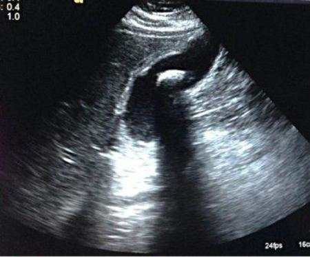
ATwinkle(0%)
BSide lobe(0%)
CShadowing(99%)
DRing-down artifact(1%)
Your answerC
Correct answerC. Shadowing
Vital Concept
Posterior shadowing indicates a strong attenuator, such as a stone or calcification, effectively blocking sound transmission and creating an anechoic (dark) area deeper to it.
Explanation
Shadowing
Shadowing artifact is an attenuation artifact. Highly attenuating objects such as stones will lead to posterior shadowing artifact behind the object, as seen posterior to the gallstone in this image.
Incorrect Answers:
A. Twinkle artifact is seen as twinkling color on color Doppler ultrasound of highly reflective structures such as gall bladder or urinary stones.
B. Side lobe artifact is a beam width artifact. Secondary to the widening of the ultrasound beam beyond the main beam distal to the focal zone, and secondary to the fact that ultrasound probes always assume that the returning echoes are being returned from the main ultrasound beam, any object outside of the main beam distal to the focal zone will be displaced into the main beam image.
D. Ring-down artifact is an ultrasound beam that results from a string of bubbles with fluid trapped centrally.
Vital Concept: Posterior shadowing indicates a strong attenuator, such as a stone or calcification, effectively blocking sound transmission and creating an anechoic (dark) area deeper to it.
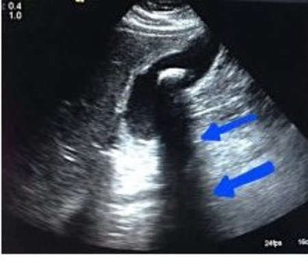
Q2
QID 37615
Correct
Which of the following is true regarding nephrogenic systemic fibrosis (NSF)?
AIt is a relatively common complication of intravenous gadolinium(0%)
BIt is an acute reaction to intravenous gadolinium(3%)
CIt only affects the skin and subcutaneous tissues(4%)
DAcute kidney injury or severe chronic kidney disease is needed for development of NSF(92%)
Your answerD
Correct answerD. Acute kidney injury or severe chronic kidney disease is needed for development of NSF
Vital Concept
Severely reduced renal function (eGFR <30 mL/min/1.73 m² or acute kidney injury) is the critical risk factor for nephrogenic systemic fibrosis, as NSF occurs almost exclusively in patients with advanced kidney impairment exposed to gadolinium-based contrast agents.
Explanation
Acute kidney injury or severe chronic kidney disease is needed for development of NSF
The ACR Manual on Contrast Media defines NSF as “a fibrosing disease, primarily identified in the skin and subcutaneous tissues but also known to involve other organs, such as the lungs, esophagus, heart, and skeletal muscles. Initial symptoms typically include skin thickening and/or pruritis. In some patients, the disease may be fatal.” Although there are continuing controversies and uncertainties regarding NSF, it is now generally accepted that exposure to GBCM in the setting of acute kidney injury or severe chronic kidney disease is needed for development of NSF.
Incorrect Answers:
A. NSF is not common since the recognition of NSF and its relationship to GBCM administration, the incidence of GSF has fallen to close to zero. This has happened primarily through screening patients and avoiding or severely limiting administration of GBCM to patients on dialysis, with an eGFR <30 ml/min/1.73 m2 or with acute kidney injury. The ACR Manual on Contrast Media recommends obtaining an eGFR in patients who would be considered for GBCM administration who have a history of renal disease (including a solitary kidney, kidney transplant, or renal neoplasm), over age 60, or with a history of hypertension or diabetes mellitus.
B. NSF is not an acute process, often taking days to weeks to produce any characteristic symptoms.
C. The ACR Manual on Contrast Media defines NSF as “a fibrosing disease, primarily identified in the skin and subcutaneous tissues, but also known to involve other organs, such as the lungs, esophagus, heart, and skeletal muscles.
Vital Concept: Severely reduced renal function (eGFR <30 mL/min/1.73 m² or acute kidney injury) is the critical risk factor for nephrogenic systemic fibrosis, as NSF occurs almost exclusively in patients with advanced kidney impairment exposed to gadolinium-based contrast agents.
Q3
QID 21092
Correct
Which of the following is the most feared complication in this patient, given the imaging finding(s) below?
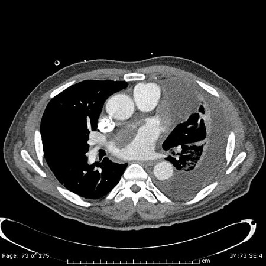
AEmpyema(7%)
BRespiratory failure(6%)
CStroke(74%)
DHeart failure(13%)
Your answerC
Correct answerC. Stroke
Explanation
Stroke
This patient has a large left atrial lumen and left atrial appendage thrombus. The patient also has a loculated left pleural effusion. However, the most feared complication will be peripheral embolization of the thrombus and stroke.
Incorrect Answers:
A. Empyema is inflammatory fluid and debris in the pleural space. It results from an untreated pleural-space infection that progresses from free-flowing pleural fluid to a complex collection in the pleural space. Empyema most commonly occurs in the setting of bacterial pneumonia. About 20 to 60% of all cases of pneumonia are associated with parapneumonic effusion. With appropriate antibiotic therapy, parapneumonic effusions most often resolve without complications, and they are of little clinical significance.
B. As stated above, the pleural effusion may result in respiratory failure, but is more treatable and, in general, less feared.
D. A left atrial thrombus is initially more likely to result in stroke than heart failure.
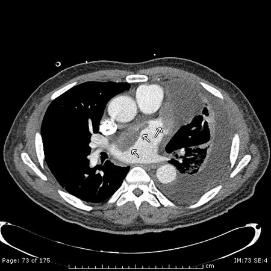
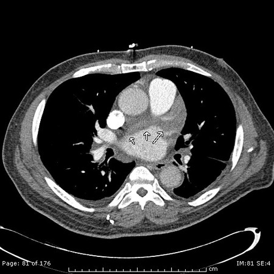
Q4
QID 39262
Correct
A 28-year-old female patient is referred to the ultrasound department with postpartum pelvic pain. The patient had an uneventful vaginal delivery one week prior. A pelvic ultrasound is performed and is shown below. Which of the following is most suggestive of retained products of conception (RPOC)?
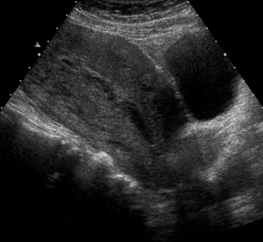
ADoppler flow in endometrial debris(91%)
BEchogenic foci(5%)
CThickening of the endometrial stripe(4%)
DEndometrial fluid(1%)
EUterine enlargement(0%)
Your answerA
Correct answerA. Doppler flow in endometrial debris
Explanation
Doppler flow in endometrial debris
The presence of Doppler flow in endometrial debris is not normal and is suggestive of retained products of conception. The image shows a mildly enlarged uterus with heterogeneous thickening of the endometrial stripe (red arrows), endometrial fluid (blue arrow), and subtle echogenic foci (green arrows).
Incorrect Answers:
B. Echogenic foci are thought to be due to air and may persist for up to three weeks.
C. Thickening of the endometrial stripe is expected and can measure up to 45 mm (mean 15.8) on day 1 and as much as 21 mm (mean 5.5) on day 28 postpartum.
D. Fluid or echogenic material in the uterine cavity may both be normal findings. Fluid is present in up to 90% of patients on day 7 postpartum, and 75% on day 14 postpartum.
E. Findings include expected changes in the normal ultrasound appearance of the postpartum uterus. It may take up to 8 weeks for the appearance to normalize. The uterus can remain enlarged for weeks to months following delivery.
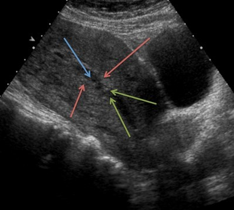
Q5
QID 22393
Correct
A 43-year-old male patient presents with right groin pain a few hours after cardiac catheterization and remains anticoagulated. Routine post-procedural groin compression was performed immediately post procedure. What is the preferred treatment in this case?
Ultrasound-guided thrombin injection is more effective than compression for femoral pseudoaneurysms, especially in anticoagulated patients.
Explanation
Ultrasound-guided thrombin injection
The images demonstrate an iatrogenic femoral artery pseudoaneurysm seen in this case as a “yin yang” sign (yellow arrow). This is representative of to-and-fro flow into and out of the pseudoaneurysm sac. The preferred first-line treatment is currently ultrasound-guided graded thrombin injection as it is superior in terms of efficacy and as safe as ultrasound-guided compression, especially in a patient that is on anticoagulation and has already undergone compression.
Incorrect Answers:
B. As stated above, UGTI is superior in terms of efficacy and as safe as ultrasound-guided compression (UGC) and should be used as the primary modality for the treatment of post-catheter pseudoaneurysm.
C. D. Catheter-directed techniques for delivery of embolic materials are not recommended as first-line therapy.
E. Covered stents may be employed for complicated cases in which primary techniques are not effective. Covered stenting in the femoral artery may be more problematic due to flexion at the hip, which may place the stent at risk for fracture or thrombosis.
Vital Concept: Ultrasound-guided thrombin injection is more effective than compression for femoral pseudoaneurysms, especially in anticoagulated patients.
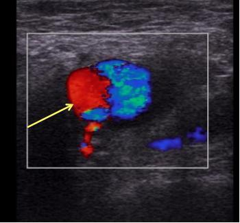
Q6
QID 38091
Correct
Which of the following demonstrates the worst performance given the 4-receiver operating characteristic (ROC) curves shown below?
AA(4%)
BB(0%)
CC(0%)
DD(94%)
EThere is not enough information to answer the question.(1%)
Your answerD
Correct answerD. D
Explanation
D
A receiver operating characteristic (ROC) curve is a statistical tool that illustrates the performance of a system as its discrimination threshold is varied.
The curve is created by plotting the true-positive rate (y-axis) against the false-positive rate (x-axis) at various threshold settings. The true-positive rate is also known as the sensitivity. The false-positive rate is also known as the fall-out and is calculated by 1-specificity.
The ROC curve is a statistical relationship used frequently in radiology, particularly with regard to limits of detection and screening. More broadly, the curve can be used to find the point at which the trade-off between sensitivity and specificity is optimal given the modality, disease, and patient population in question. A worthless diagnostic test would be no better than chance, which graphically appears as a straight line through the origin.
Incorrect Answers:
A. A perfect test would be perfectly sensitive and have no false positives (100% specific). This curve would go through the point at the very top left corner.
B. C. One can generate an ROC curve between these two extremes by determining the cut-off points for sensitivity and specificity given the modality, disease, and patient population in question.
Q7
QID 4993
Correct
A 35-year-old female presents with paresthesias in the distal upper extremities. Her magnetic resonance image (MRI) is shown below. Which of the following do you anticipate will be indicated for further evaluation and management of this case?
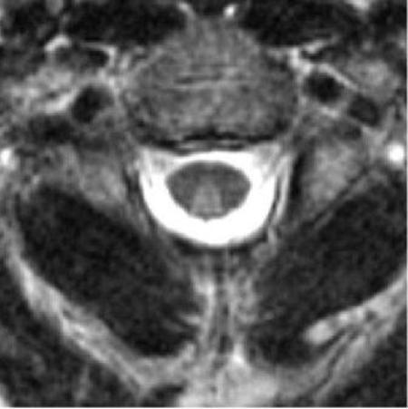
AEchocardiogram with attention to the valves.(1%)
BDigital subtraction angiogram.(2%)
CCorticosteroid administration.(3%)
DSerum cobalamin levels.(85%)
ECerebrospinal fluid (CSF) analysis for oligoclonal bands.(9%)
Your answerD
Correct answerD. Serum cobalamin levels.
Vital Concept
Subacute combined degeneration of the cord (SACD) is caused by vitamin B12 deficiency. Most commonly there is symmetric bilateral high signal within the dorsal columns. This appearance has been described as the inverted "V" sign 4. The signal changes typically begin in the upper thoracic region, with ascending or descending progression.
Explanation
Serum cobalamin levels.
The T2-weighted MRI of the spinal cord shows increased signal involving the bilateral dorsal columns in a classic “inverted V” configuration. This is highly suggestive of subacute combined degeneration related to a cobalamin (vitamin B12) deficiency. As it is the most likely etiology, serum cobalamin levels should be checked for verification, followed by administration of cobalamin.
Incorrect Answers:
A.
This would be appropriate to rule out endocarditis. Similar MRI findings can be seen in tabes dorsalis related to syphilis, or occasionally other infectious etiologies such as HIV myelopathy, herpes simplex virus (HSV), or Lyme disease, but are less common, so it makes most sense to first test for the most common etiology.
B.
Digital subtraction angiogram would be indicated to rule out venous thrombosis.
C.
Corticosteroids would be a useful intervention for spinal cord injury (SCI). The MRI is not the typical appearance of spinal cord infarct, which most commonly involves the ventral cord or gray matter (snake eyes appearance).
E.
Cerebrospinal fluid (CSF) analysis for oligoclonal bands would help rule out multiple sclerosis. Inflammatory conditions such as multiple sclerosis would be less likely to have such striking dorsal column only involvement.
Vital Concept: Subacute combined degeneration of the cord (SACD) is caused by vitamin B12 deficiency. Most commonly there is symmetric bilateral high signal within the dorsal columns. This appearance has been described as the inverted "V" sign 4. The signal changes typically begin in the upper thoracic region, with ascending or descending progression.
Q8
QID 5016
Correct
The following image was taken from a newborn infant. What is the most likely diagnosis?
Multiple small filling defects in the distal ileum with microcolon is consistent with meconium ileus and should prompt cystic fibrosis testing. The water-soluble contrast can be therapeutic by facilitating passage of inspissated meconium.
Explanation
Meconium ileus
The image shown is from a water-soluble contrast enema in a newborn who has failed to pass meconium. The enema shows a small caliber colon affecting the entire colon. In the right lower quadrant, contrast is seen refluxing into the distal ileum with multiple filling defects. This is most consistent with meconium ileus. Reports have shown that up to 90% of patients with meconium ileus have cystic fibrosis; however, only 10% to 20% of patients with CF present with meconium ileus.
Incorrect Answers:
A. Functional immaturity of the colon typically does not involve the ascending or transverse colon.
C. A distal ileal atresia can give a microcolon; however, you would not expect the normal caliber ileum with filling defects.
D. Total colonic Hirschsprung disease is in the differential diagnosis but is much less common.
E. MMIHS may also present with microcolon but is very rare. MMIHS is a typically fatal autosomal recessive condition which may present with constipation and urinary retention, microcolon, distended bladder, hydronephrosis, and dilated small bowel.
Vital Concept: Multiple small filling defects in the distal ileum with microcolon is consistent with meconium ileus and should prompt cystic fibrosis testing. The water-soluble contrast can be therapeutic by facilitating passage of inspissated meconium.
Q9
QID 2918
Correct
An experimental Tc-99m compound is developed for use in a nuclear medicine protocol. The effective half-life (t1/2e) is measured at 2 hours. Which of the following is the biologic half-life of the compound?
A1 hour(13%)
B3 hours(73%)
C5 hours(6%)
D8 hours(7%)
E13 hours(2%)
Your answerB
Correct answerB. 3 hours
Vital Concept
Use the following equation when relating biological, physical and effective half lives:
Explanation
3 hours
Biological half life is the time required for a biological system to eliminate, by natural processes, half of the amount of a substance (such as a radioactive material) that has entered it.
Where:
Biological half life = bHL
Physical half life = pHL; pHL of Tc99m is 6 hours.
Effective half life = eHL; eHL is given as 2 hours
eHL = (pHL x bHL) / (pHL + bHL)
or 1/eHL = 1/pHL + 1/bHL
Solve for bHL:
1/bHL = 1/eHL - 1/pHL
1/bHL = 1/2 - 1/6 (eHL and pHL as given above)
1/bHL = 1/3
Therefore, biological half life (bHL) = 3 hours
Incorrect Answers:
A. C. D. E. As discussed above, these are incorrect answer options.
Vital Concept: Use the following equation when relating biological, physical and effective half lives:
1/bHL = 1/eHL - 1/pHL
Q10
QID 30037
Correct
A 74-year-old patient presents with a sagging right eyelid. They have a 60-pack-year smoking history and chronic obstructive pulmonary disease. The patient experiences occasional coughing fits accompanied by difficulty breathing. Physical examination reveals right eye ptosis and a constricted right pupil. The remainder of the examination is normal, including cranial nerve function. Which of the following is the most likely finding on chest radiograph?
ANormal radiograph(1%)
BRight apical cavitary infection(2%)
CRight-sided pleural effusion(0%)
DRight apical mass(97%)
ERight lower lobe consolidation(0%)
Your answerD
Correct answerD. Right apical mass
Vital Concept
The triad of ptosis, miosis, and facial anhidrosis classically characterizes Horner syndrome. Horner syndrome is the result of the interruption of the occulosympathetic chain. It may result from apical lung tumors.
Explanation
Right apical mass
This patient's history and physical exam indicate right-sided Horner syndrome. Horner syndrome results from the interruption of the occulosympathetic chain. It results in ipsilateral miosis, partial ptosis (due to superior tarsal muscle weakness), and facial anhidrosis, primarily associated with central, and preganglionic lesions. Facial flushing may occur. Etiologies include brainstem stroke, neoplasm, and carotid dissection, although Horner syndrome is usually idiopathic. Apical lung lesions (Pancoast tumor) are a common etiology and considering this patient's history and physical exam, apical lung cancer is the likely diagnosis.
pancoast tumor/right apical mass on CXR
Incorrect Answers:
A. The patient’s history and physical exam suggest a lung disease process.
B. A right apical cavitary lesion may be seen in reactivation tuberculosis. This condition presents constitutional symptoms of fevers, night sweats, and weight loss. Furthermore, these lesions do not often lead to Horner syndrome.
C. Right-sided pleural effusion would not be expected to cause the nerve compression associated with Horner’s syndrome.
E. Right lower lobe consolidation is most often seen in pneumonia. Pneumonia would not exert a mass effect sufficient to cause neurovascular compression. Second, the lung base location is anatomically distinct from the stellate ganglion and would not lead to Horner syndrome.
Vital Concept: The triad of ptosis, miosis, and facial anhidrosis classically characterizes Horner syndrome. Horner syndrome is the result of the interruption of the occulosympathetic chain. It may result from apical lung tumors.
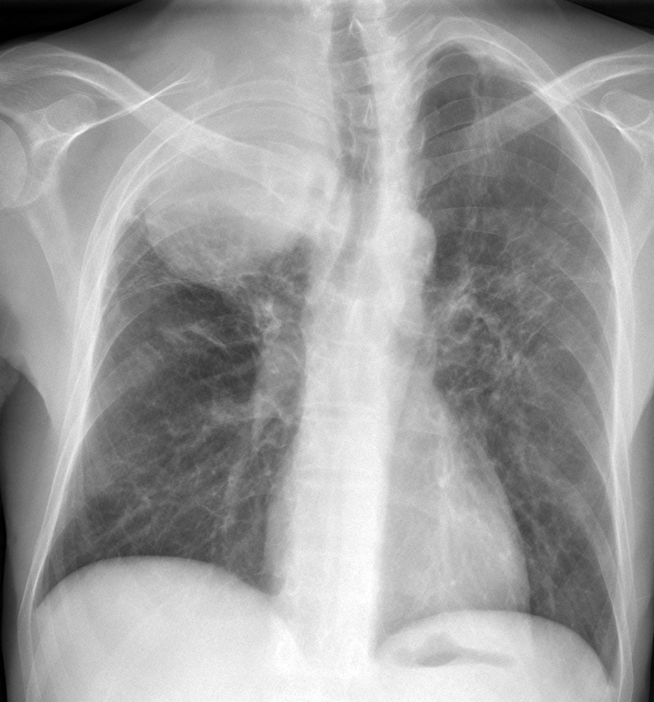
Q11
QID 37626
Correct
Recognizing the increasing radiation exposure from medical imaging and the associated risks, organized radiology has put forth multiple initiatives to measure and reduce medical radiation exposure. Which of these initiatives deals specifically with the diagnostic imaging of children?
AImage Gently(83%)
BStep Lightly(9%)
CImage Wisely(4%)
DCT Dose Index Registry(0%)
EALARA(5%)
Your answerA
Correct answerA. Image Gently
Explanation
Image Gently
In recognition of the potential risks of radiation from diagnostic imaging procedures, particularly in the pediatric population, the Society for Pediatric Radiology formed a committee in late 2006. In 2007, this committee reached out to other major organizations and formed the Alliance for Radiation Safety in Pediatric Imaging. The message of the Image Gently campaign is simple: Reduce or "child-size" the amount of radiation used when obtaining a CT scan in children. This message is targeted to the radiologists who perform relatively few CT examinations of pediatric patients in their hospital or outpatient practices but who, in aggregate, perform many pediatric CT examinations throughout the United States.
Incorrect Answers:
B. "Step Lightly" deals with pediatric interventional, not diagnostic, radiology. The main goal of the Step Lightly campaign is to educate the health care team and the public on the desirability of reducing radiation dose as much as possible in pediatric interventional radiology, while continuing to benefit as a society from the innovative and at times life-saving techniques of the specialty. Ancillary goals include providing education on the effects of medical radiation in children, encouraging a team effort in improving radiation safety in pediatric interventional radiology, and providing easily accessible and usable information for health professionals and patients.
C. Responding to the same concerns that led to the Image Gently campaign for the pediatric population, in June 2009 the American College of Radiology and the Radiological Society of North America established the Joint Task Force on Adult Radiation Protection to address issues of radiation dose optimization in the adult population. The name “Image Wisely” was chosen for the campaign for adult radiation protection. The task force chose to broaden its membership to include the American Association of Physicists in Medicine and the American Society of Radiologic Technologists. However, in contrast to Image Gently, the Image Wisely campaign has not sought to add other organizations for a broader alliance.
D. The American College of Radiology has developed a Dose Index Registry (DIR). Data from CT scanners at participating facilities including CT Dose Index volume and dose length product are sent to the DIR, and summary data are reported back to the facilities, along with comparisons to similar facilities that participate in the registry. Facilities can use this data to track their performance and adjust their scanning parameters and/or protocols as appropriate.
E. Radiologists have long recognized the principle of ALARA (as low as reasonably achievable) to minimize radiation dose delivered to patients, staff, and society as a whole. Although the ALARA principle addresses the actual performance of an examination, the first steps in reducing radiation exposure are to perform only indicated examinations, to perform the most appropriate examination, and to consider alternative examinations that do not use ionizing radiation, such as ultrasound and MRI, when appropriate, especially in populations where radiation exposure is more significant, such as in children and young adults with expected benign disease.
Q12
QID 56271
Correct
Which of the following best describes the American College of Radiology recommendation for use of gadolinium-based contrast in pregnant patients?
AGadolinium-based contrast is absolutely contraindicated in pregnant patients, and should never be used(11%)
BGadolinium-based contrast does not have the potential to harm the developing fetus(0%)
CAlthough gadolinium-based contrast crosses the placenta, it is rapidly cleared by fetal kidneys and therefore there is no risk of prolonged exposure to the fetus(1%)
DGadolinium-based contrast is relatively contraindicated in pregnant patients and should only be administered in carefully selected situations where benefits significantly outweigh risk to the mother and fetus(87%)
EThere is no contraindication to the use of gadolinium contrast in pregnant patients and routine use in both emergent and collected cases is well documented(1%)
Your answerD
Correct answerD. Gadolinium-based contrast is relatively contraindicated in pregnant patients and should only be administered in carefully selected situations where benefits significantly outweigh risk to the mother and fetus
Vital Concept
Gadolinium-based contrast media are FDA pregnancy class C and relatively contraindicated. They cross the placental barrier, are excreted into amniotic fluid where prolonged retention increases risk of gadolinium ion dissociation and should only be administered when benefit clearly outweighs potential risk to the fetus.
Explanation
Gadolinium-based contrast is relatively contraindicated in pregnant patients and should only be administered in carefully selected situations where benefits significantly outweigh risk to the mother and fetus
Gadolinium-based contrast agents are relatively contraindicated in pregnant patients.
Incorrect Answers:
A. Current American College of Radiology recommendations suggest judicious use where benefit significantly outweighs potential risk.
B. With prolonged presence in the amniotic fluid, there is potential for dissociation of the contrast and potential toxicity to result from the gadolinium ion.
C. Gadolinium agents pass through the placenta and enter fetal circulation, where they are filtered by fetal kidneys and excreted into the amniotic fluid where they may remain for a prolonged period of time.
E. To date, there is no reliable data regarding the specific incidence of toxic events within a fetus or pregnant woman following the administration of gadolinium contrast.
Vital Concept: Gadolinium-based contrast media are FDA pregnancy class C and relatively contraindicated. They cross the placental barrier, are excreted into amniotic fluid where prolonged retention increases risk of gadolinium ion dissociation and should only be administered when benefit clearly outweighs potential risk to the fetus.
Q13
QID 55998
Correct
Which of the following statements most accurately describes the patient screening procedure(s) performed before a direct MR arthrography?
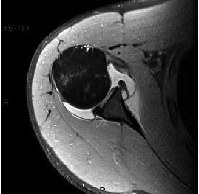
ANo routine patient screening procedures are recommended before direct MR arthrography.(2%)
BEvaluation of renal function; specifically, estimated glomerular filtration rate is recommended.(4%)
CObtaining a history of allergic reaction to iodinated contrast material is required if using ultrasound guidance for the injection.(1%)
DObtaining a history of diabetes and prior glucose intolerance to corticosteroids.(1%)
EObtaining a complete history of allergic reactions is recommended, regardless of the method of injection.(92%)
Your answerE
Correct answerE. Obtaining a complete history of allergic reactions is recommended, regardless of the method of injection.
Explanation
Obtaining a complete history of allergic reactions is recommended, regardless of the method of injection.
A complete allergic history is recommended before performing any radiologic study using contrast material. This includes obtaining information about the allergic agent, and the type of allergic response.
Incorrect Answers:
A. There are several important considerations prior to performing direct MR arthrography, as detailed below.
B. Evaluation of renal function is not recommended as only a very small amount of iodinated contrast (1 to 3 mL) is sometimes used to confirm the intra-articular position of the needle during fluoroscopic injections.
D. Obtaining a history of diabetes and glucose intolerance to steroids (including intraarticular) is useful when evaluating a patient for therapeutic joint injections, but not MR arthrography.
Q14
QID 9578
Correct
A 46-year-old male presents with history of remote knee trauma. Which of the following structures is injured in this frontal left knee plain film?
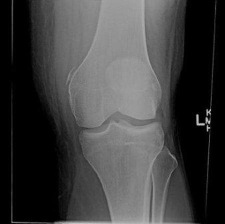
AIliotibial band(3%)
BMeniscotibial ligament(3%)
CArcuate ligament(4%)
DMedial collateral ligament(89%)
Your answerD
Correct answerD. Medial collateral ligament
Vital Concept
Pellegrini-Stieda lesion is post-traumatic ossification adjacent to the medial femoral condyle near the medial collateral ligament insertion. It typically occurs in males following knee trauma. The lesion is usually asymptomatic but becomes Pellegrini-Stieda syndrome when painful.
Explanation
Medial collateral ligament
The post-traumatic ossification in this case is called a "Pellegrini-Stieda lesion" and represents chronic ossification of the MCL at the anterior superior margin of the medial femoral condyle, and not an acute fracture.
Incorrect Answers:
A. The iliotibial band is a thick band of fascia formed proximally at the hip by the fascia of the gluteus maximus, gluteus medius, and tensor fascia lata muscles. The band consists of deep and superficial layers. The superficial layer is the main tendinous component and inserts onto Gerdy's tubercle of the anterior lateral tibia. The deep layer inserts on the inter-muscular septum of the distal femur.
B. The MCL is formed of two layers: a superficial medial collateral ligament (MCL) and a deeper layer made of the meniscofemoral and meniscotibial ligaments. A small bursa separates both layers. The post-traumatic ossification is called a "Pellegrini-Stieda lesion" and represents chronic ossification of the MCL at the anterior superior margin of the medial femoral condyle, and not an acute fracture.
C. The arcuate ligament is part of the posterolateral ligament complex of the knee and is a Y-shaped thickening of the posterolateral capsule.
Vital Concept: Pellegrini-Stieda lesion is post-traumatic ossification adjacent to the medial femoral condyle near the medial collateral ligament insertion. It typically occurs in males following knee trauma. The lesion is usually asymptomatic but becomes Pellegrini-Stieda syndrome when painful.
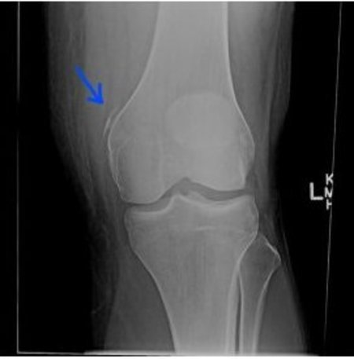
Q15
QID 22600
Correct
A 9-year-old female patient presents with worsening headache, nausea, and vomiting. Which of the following is the most likely diagnosis?
Subependymal giant cell astrocytoma appears as a large enhancing mass near the foramen of Monro in patients with tuberous sclerosis. It demonstrates variable T1 and T2 signal intensity with avid enhancement. SEGAs are larger than subependymal nodules and may cause obstructive hydrocephalus.
Explanation
Subependymal giant cell astrocytoma (SEGA)
Subependymal giant cell astrocytoma (SEGA) tumors are WHO grade I tumors arising in the subependymal regions (purple arrow) of patients with tuberous sclerosis. They are lobular slow-growing tumors arising near the foramen of Monro and typically demonstrate marked enhancement. They are typically curable with complete resection. In patients in which SEGA is suspected, look for other signs of tuberous sclerosis, such as subependymal nodules (pink arrow), and cortical tubers (blue arrows). The first image is obtained at the time of presentation, and the second image was obtained several years prior.
Incorrect Answers:
A and B. Choroid plexus papillomas are WHO grade I neoplasms arising from choroid plexus epithelial cells. These findings are not specifically associated with tuberous sclerosis. Frequently they are intraventricular in location and markedly enhancing with strikingly lobulated margins. They are usually isodense or hyperdense to cerebral tissue and may have calcifications. On MR imaging, they are iso- to hypointense on T1WI and iso- to hyperintense on T2WI with marked enhancement on post-contrast imaging. They are frequently associated with hydrocephalus. They are most commonly located at the atrium of the lateral ventricles (about 50%), with about 40% within the fourth ventricle and a much smaller proportion in the roof of the third ventricle. Choroid plexus papillomas are notoriously difficult to distinguish from choroid plexus carcinomas on imaging, such that they are often followed over long periods of time for evidence of invasion. Often, definitive diagnosis may only be made on pathologic analysis. Heterogeneity of enhancement and increasing edema along the adjacent brain parenchyma may be the only imaging features to suggest invasive choroid plexus carcinoma. However, these are inconsistent at best.
D. Subependymomas are benign WHO grade I lesions, which appear as T2 hyperintense intraventricular masses with variable enhancement that most frequently appear in the fourth ventricle but may also be seen in the lateral and third ventricles. They arise from ependymal cells and are typically attached to the ventricular walls. They are more common in older patients in the fifth and sixth decades. They are best differentiated from SEGA tumors by their location (SEGAs are more commonly associated with the foramen of Monro) and the lack of associated findings of tuberous sclerosis (cortical tubers and white matter lesions).
E. Central neurocytomas are intraventricular tumors that most frequently appear as “bubbly” masses in the lateral ventricles and are characteristically associated with the ventricular walls or septum pellucidum. Infrequently they may be seen in the third ventricle and rarely in the fourth ventricle. They typically are heterogeneous on T1- and T2-weighted imaging and prominently enhance. They frequently have prominent internal calcifications and flow voids. They are more commonly seen in young adult patients.
Vital Concept: Subependymal giant cell astrocytoma appears as a large enhancing mass near the foramen of Monro in patients with tuberous sclerosis. It demonstrates variable T1 and T2 signal intensity with avid enhancement. SEGAs are larger than subependymal nodules and may cause obstructive hydrocephalus.
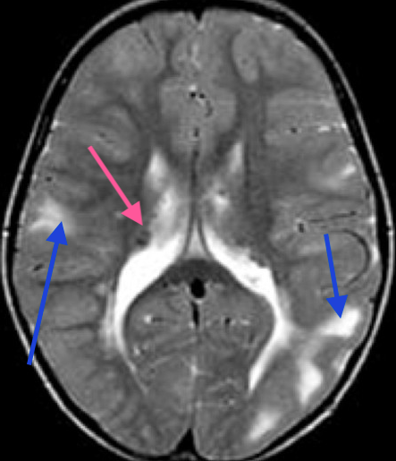
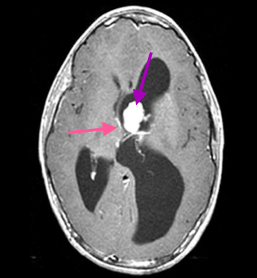
Q16
QID 21023
Correct
A 43-year-old male patient presents with progressive right upper quadrant pain and clay-colored stools. Invasion of which of the following structures would preclude resection?
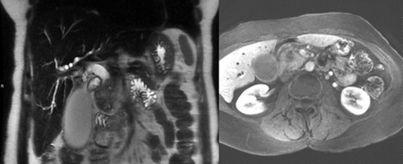
AGreater curvature of stomach(2%)
BCommon bile duct(2%)
CDuodenum(1%)
DSuperior mesenteric vein(8%)
ESuperior mesenteric artery(88%)
Your answerE
Correct answerE. Superior mesenteric artery
Explanation
Superior mesenteric artery
There is an ill-defined mass in the pancreatic head (blue arrow), causing diffuse intra- and extrahepatic biliary dilatation (green arrows) very suspicious for pancreatic adenocarcinoma. There is a fat plane between the mass and the superior mesenteric artery (SMA) (red arrow). The mass closely opposes the superior mesenteric vein (SMV) (yellow arrow). The most recent American Joint Committee on Cancer (AJCC) TNM (Tumor, lymph Nodes, Metastasis) staging system states that involvement/ encasement of the celiac artery or superior mesenteric artery precludes surgical resection (T4 disease). Previous editions of the TNM staging criteria stated that extrapancreatic extension to the stomach, spleen, colon, portal vein, and SMV were unresectable. Under the current edition, these are T3 lesions and are eligible for surgical resection. The most important point is that comments with regards to “resectability” should be made in conjunction with the surgical referrer at each institution.
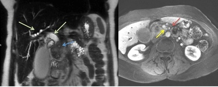
Q17
QID 44237
Correct
A 20-year-old patient arrives in the trauma bay after a motor vehicle accident (MVA). Which of the following is the correct diagnosis?
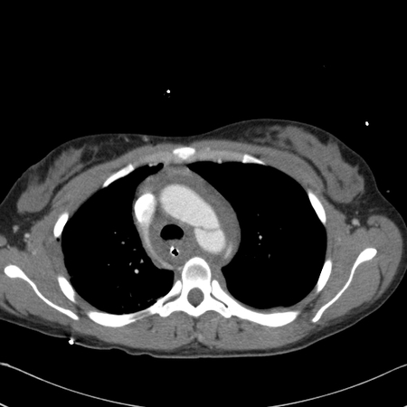
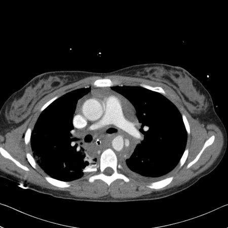
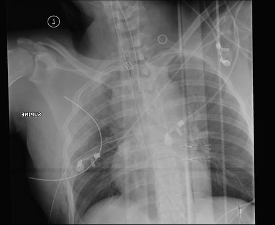
AAortic dissection(26%)
BAortic transection(73%)
CDuctus diverticulum(0%)
DMediastinitis(0%)
Your answerB
Correct answerB. Aortic transection
Vital Concept
Aortic transection with dissection on CT shows complete aortic wall disruption with active contrast extravasation and massive mediastinal hematoma - requires emergency endovascular or surgical repair due to high mortality risk.
Explanation
Aortic transection
Radiograph examination demonstrates a widened mediastinum, and computed tomography (CT) examination demonstrates aortic wall disruption/pseudoaneurysm of the descending thoracic aorta with secondary intimal flap present in the ascending and descending aorta, along with mediastinal hematoma. This is the most common presentation of aortic transection in a patient that survives imaging. Immediate surgical repair is mandatory.
Incorrect Answers:
A. Aortic dissection is the prototype and most common form of the acute aortic syndromes. It occurs when blood enters the medial layer of the aortic wall through a tear or penetrating ulcer in the intima and tracks longitudinally along with the media, forming a second blood-filled channel (false lumen) within the vessel wall. Though an intimal flap is seen in this case, it is important to remember that intimal flaps can be seen in the setting of aortic transection as well. The presence of pseudoaneurysm and mediastinal hematoma supports a full-thickness tear of the aorta, making aortic transection the best answer.
C. Ductus arteriosus aneurysm is rare in adults and preoperative diagnosis has not been usually done. 3D computed tomographic scanning may show a saccular aneurysm originating from the distal aortic arch toward the left pulmonary artery, with notching in the orifice of the aortic side.
D. Mediastinitis by definition refers to inflammation of the connective tissues and fat within the mediastinum. In clinical practice, mediastinitis is generally used to refer to acute mediastinitis, resulting from bacterial infection within the mediastinum. This is considered a serious and potentially life-threatening condition. Chronic mediastinitis (fibrosing mediastinitis) is a condition with a varied etiology that includes idiopathic, immune-mediated, or infective (e.g. tuberculosis).
Vital Concept: Aortic transection with dissection on CT shows complete aortic wall disruption with active contrast extravasation and massive mediastinal hematoma - requires emergency endovascular or surgical repair due to high mortality risk.
Q18
QID 43912
Correct
What is the etiology of the lesions causing this patient’s symptoms of paresthesias and gait ataxia?
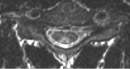
AHemorrhage(3%)
BGranulomatous disease(1%)
CVitamin deficiency(95%)
DNeoplastic(0%)
EAcute Infection(1%)
Your answerC
Correct answerC. Vitamin deficiency
Explanation
Vitamin deficiency
The axial T2 image shows symmetric bilateral increased signal within the dorsal columns (blue arrows), or an “inverted V” sign. This appearance and distribution are seen in subacute combined degeneration, which is secondary to vitamin B12 deficiency. Subacute combined degeneration of the cord is caused by a vitamin B12 deficiency. It is seen most commonly in older patients (over 60 years old). The clinical presentation of SCD is usually paresthesia in the hands and feet, with progression to sensory loss, gait ataxia, and distal weakness, especially in the legs.
The most common MR appearance is symmetric bilateral high signal within the dorsal columns, which has been described as the "inverted V" sign. The signal abnormality typically begins in the upper thoracic cord, with ascending or descending progression.
Although the other answer choices all cause abnormal cord signal, none would be expected to have the appearance and distribution present in this case.
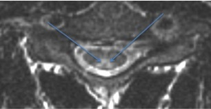
Q19
QID 2684
Correct
Which of the following is a common mammographic finding after reduction mammoplasty?
ARedistribution of residual breast tissue to a higher position relative to the nipple(44%)
BPleomorphic calcifications(1%)
CSkin thickening(2%)
DRedistribution of residual breast tissue to a lower position relative to the nipple(52%)
Your answerD
Correct answerD. Redistribution of residual breast tissue to a lower position relative to the nipple
Vital Concept
Most of the tissue removed from the breast during mammoplasty is inferior to the nipple, so when post-surgical scarring occurs, it can contribute to retraction of the remaining tissue inferiorly. The nipple is also commonly elevated as part of the mammoplasty procedure, accounting for more superior position of the nipple on subsequent mammography.
Explanation
Redistribution of residual breast tissue to a lower position relative to the nipple
The most common mammographic findings after reduction mammoplasty are parenchymal redistribution to a lower position relative to the nipple and elevation of the nipple. Most of the tissue removed from the breast is inferior to the nipple, so when post-surgical scarring occurs, it can contribute to retraction of the remaining tissue inferiorly. The nipple is also commonly elevated as part of the mammoplasty procedure, accounting for more superior position of the nipple on subsequent mammography.
Fat necrosis also occurs which leads to findings of coarse calcifications and "oil cysts." These calcifications can be distinguished from malignancy because they are typically coarser, round and close to skin. Versus calcifications with breast cancer are typically deeper in the breast and not as well formed. "Oil cysts" with fat necrosis are thin capsules around a fat density center creating an "eggshell" appearance. In rare cases there can also be skin thickening and a retroareolar fibrotic band on mammography after reduction.
Incorrect Answers:
A. Parenchymal redistribution as residual breast tissue is shifted to a lower position (dependent portion of the breast), not higher.
B. Coarse calcifications close to skin from localized fat necrosis can be present after reduction mammography. Pleomorphic calcifications are seen with breast malignancy.
C. Skin thickening is a rare finding after reduction mammography, only in about 1.7% of cases.
Vital Concept: Most of the tissue removed from the breast during mammoplasty is inferior to the nipple, so when post-surgical scarring occurs, it can contribute to retraction of the remaining tissue inferiorly. The nipple is also commonly elevated as part of the mammoplasty procedure, accounting for more superior position of the nipple on subsequent mammography.
Q20
QID 38057
Incorrect
The most common stage of error occurrence in diagnostic radiology is at which of the following?
APerception(73%)
BInterpretation(11%)
CReporting(2%)
DCommunication(14%)
EImage acquisition(0%)
Your answerB
Correct answerA. Perception
Explanation
Perception
Errors can be made at various stages in the imaging cycle, from the clinical question through the request, patient preparation, image acquisition and processing, radiologist reporting and communication of results. An error that occurs at the detection phase of image reading when an abnormality is not appreciated is a perceptual error or false negative and is by far the most common type of error.
Incorrect Answers:
B. Less commonly, an abnormality, which is reported as present but is later shown not to be present, is a false positive error. An error that occurs at the interpretation phase is one that results in an incorrect diagnosis being given to an abnormal finding or rarely to a normal finding. These are both examples of cognitive errors.
C, D, and E. In contrast to cognitive errors, errors of reporting, communication, and image acquisition are examples of systems errors. Radiologic errors, as in general medical diagnosis faults, often result from a combination or interaction between cognitive and system errors. Again, errors of the detection/perception phase are still the most frequent. More emphasis is being placed on communication to avoid systemic problems in relaying the diagnosis.
Q21
QID 3077
Correct
A patient presenting with hyperthyroidism underwent an iodine-123 thyroid scintigram. Representative static images of the thyroid gland at 24 hours are shown here. Twenty-four-hour I-123 thyroid uptake was calculated at 60%. What is the best diagnosis given this constellation of findings?
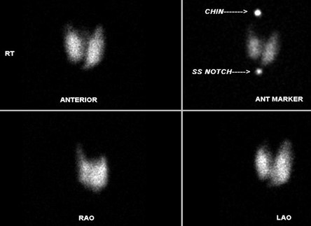
AMultinodular goiter(0%)
BThyroid carcinoma(0%)
CNormal thyroid study(4%)
DGraves' disease(95%)
EHyperfunctioning nodule(0%)
Your answerD
Correct answerD. Graves' disease
Vital Concept
Graves' disease demonstrates diffuse increased radioiodine uptake throughout both thyroid lobes with 24-hour uptake exceeding 30%.
Explanation
Graves' disease
The findings of an enlarged thyroid gland demonstrating homogeneously increased iodine-123 radiopharmaceutical uptake is compatible with Graves' disease (also known as diffuse toxic goiter). This is a disease which is felt to be of autoimmune origin and usually presents with varying degrees of thyromegaly. Typical 24-hour thyroid uptake values in patients suffering from Graves' disease are greater than 30%, usually in the range of 40% to 70%.
Incorrect Answers:
A. The study demonstrates homogeneous and diffuse increased uptake throughout the thyroid gland. The appearance of multinodular goiter on thyroid scintigraphy is typically an enlarged and heterogeneous thyroid due to the presence of multiple cold, warm, and hot areas.
B. Thyroid carcinoma is seen as a solitary cold thyroid nodule in the majority of cases.
C. The thyroid is enlarged in this case and demonstrates diffusely increased activity as signified by the markedly elevated 24-hour uptake of 60%. (Normal thyroid uptake at 24-hours is less than 30%).
E. The thyroid gland demonstrates diffusely increased activity rather than a solitary area of increased activity, as is seen in the setting of a hyperfunctioning nodule.
Vital Concept: Graves' disease demonstrates diffuse increased radioiodine uptake throughout both thyroid lobes with 24-hour uptake exceeding 30%.
Q22
QID 43637
Correct
Which of the following is the most likely diagnosis in this asymptomatic 45-year-old patient with a mass seen during a routine retinal exam?
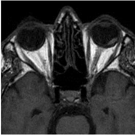
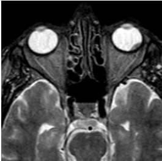
AChoroidal melanoma(79%)
BMetastases(6%)
CRetinoblastoma(3%)
DLymphoma(1%)
EChoroidal hematoma(10%)
Your answerA
Correct answerA. Choroidal melanoma
Explanation
Choroidal melanoma
The images provided show a T2 hypointense (blue arrow) moderate T1 hyperintense (green arrow) lentiform mass along the left retina. Choroidal melanoma is the most common primary intraocular malignancy in adults. The incidence increases with age, with only 2% found in patients younger than 20 years of age. CT often demonstrates an elevated, hyperdense, sharply marginated lenticular or mushroom-shaped lesion, which on MR has moderate to high intrinsic T1 signal. The clinical presentation depends on the location. When located on the iris, it may be apparent to the patient as a brown nodule. Choroidal or ciliary body masses are often identified incidentally on fundoscopy or as a result of retinal detachment in advanced disease.
Incorrect Answers:
B. The orbit is an infrequently involved site of metastatic disease, most often seen with cases of breast and lung cancer. Frequently multiple sites of metastases are involved, and there is a known history of primary malignancy. It is not an incidental finding.
C. Retinoblastoma is the most common intraocular neoplasm found in childhood. Most cases are diagnosed within the first 4 years of life. Presentation is most frequent with leukocoria or loss of a red-eye reflex.
D. Orbital lymphoma is typically seen in patients between 50 and 70 years of age. It usually appears as a soft tissue mass, either involving the conjunctiva or elsewhere in the orbit, frequently in the upper outer quadrant, closely associated with the lacrimal gland.
E. Choroidal detachment and hematoma often occur following penetrating trauma or surgery. It is marked by the accumulation of fluid in the suprachoroidal potential space and may also appear as a lentiform mass. However, it does not present as an incidental finding.
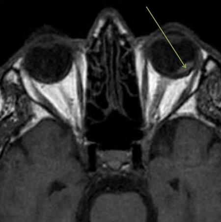
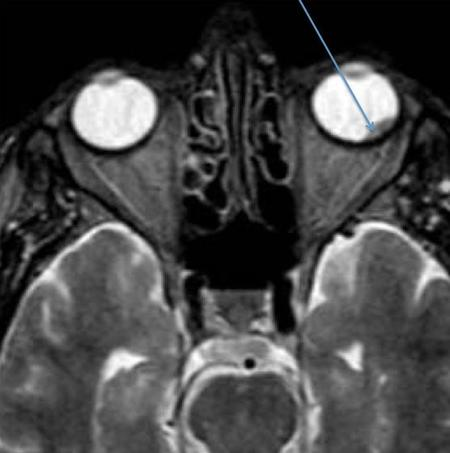
Q23
QID 37618
Correct
In 2007, Brenner and Hall published the article "Computed Tomography — An Increasing Source of Radiation Exposure" in the New England Journal of Medicine. They estimated that up to 1.5-2.0% of all cancers in the United States might be attributable to the radiation from computed tomography (CT) studies. This estimated risk is heavily dependent on which of the following factors?
AAge at time of exposure(78%)
BCT dose Index(11%)
CGender(0%)
DRegion of the body being scanned(8%)
Your answerA
Correct answerA. Age at time of exposure
Vital Concept
The number of computed tomographic (CT) studies performed is increasing rapidly. Because CT scans involve much higher doses of radiation than plain films, we are seeing a marked increase in radiation exposure in the general population. Epidemiologic studies indicate that the radiation dose from even two or three CT scans results in a detectable increase in the risk of cancer, especially in children.
Explanation
Age at time of exposure
Explanation:
According to the article, “about 0.4% of all cancers in the United States may be attributable to the radiation from CT studies.” Further, based on subsequent increases in CT usage, “this estimate might now be in the range of 1.5-2.0%.” This estimated risk is heavily dependent on age at time of exposure, the risk being much higher in younger patients, especially children. This reflects both a greater sensitivity to radiation effects in younger patients and a longer expected lifespan during which cancer can develop.
Incorrect Answers:
B C. D.
As discussed above, patient age carries the most associated risk.
Vital Concept: The number of computed tomographic (CT) studies performed is increasing rapidly. Because CT scans involve much higher doses of radiation than plain films, we are seeing a marked increase in radiation exposure in the general population. Epidemiologic studies indicate that the radiation dose from even two or three CT scans results in a detectable increase in the risk of cancer, especially in children.
Q24
QID 21198
Correct
Which of the following is the radiotracer used in this study?
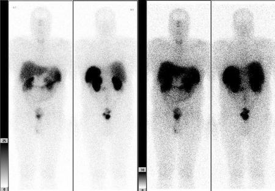
AGa-67 citrate(8%)
BIn-111 - WBC(11%)
CTc-99m - RBC(3%)
DIn-111 Octreotide(70%)
EI-123 MIBG(7%)
Your answerD
Correct answerD. In-111 Octreotide
Explanation
In-111 Octreotide
This is an In-111 octreotide scan performed in a 52-year-old male with a left peri-renal paraganglioma. The left images are at 4 hours and the right images at 24 hours. Octreotide is a somatostatin analog that binds to this receptor in tumors of neuroendocrine origin. The whole body planar images show a focus of abnormal uptake just medial to the inferior pole of the left kidney (blue arrow). There is otherwise physiological uptake in the liver, spleen, and kidneys at 4 hours, with progressive bowel excretion at 24 hours (yellow arrow). There is suggestion of some minimal diffuse thyroid uptake, which can be seen in endemic goiter and Graves' disease
Incorrect Answers:
A. Gallium is an iron analogue taken up by macrophages, which helps explain its physiological distribution within the reticulo-endothelial system (liver, spleen) and bone marrow (not seen in this case, and the most helpful clue that this is octreotide and not Ga). Gut activity is seen with Ga, similar to octreotide.
B. In-111 WBC scans show physiologic uptake in the bone marrow (not seen here), liver, and spleen, which may appear similar to a gallium scan. However, the In-111 WBC study will not have bowel activity.
C. Tc-99m tagged RBC scans have a typical appearance of blood pool distribution (not seen here).
E. Meta-iodo-benzyl-guanidine (MIBG) is a norepinephrine analog that can be labeled with either I-123 or I-131. Physiologic uptake is seen in tissues with large numbers of sympathetic receptors. A notable difference from an octreotide scan is that the MIBG scan may show myocardial uptake (not seen here). Think M for myocardium. The MIBG scan will also show liver, bowel, and salivary gland uptake, which can appear similar to octreotide.
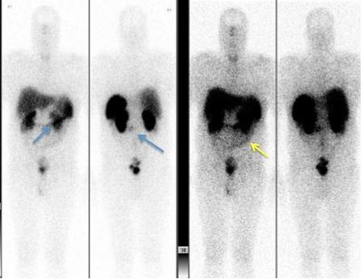
Q25
QID 22610
Correct
A newborn male patient presents for follow-up of an abnormality noted on prenatal ultrasound. Which of the following is the diagnosis?
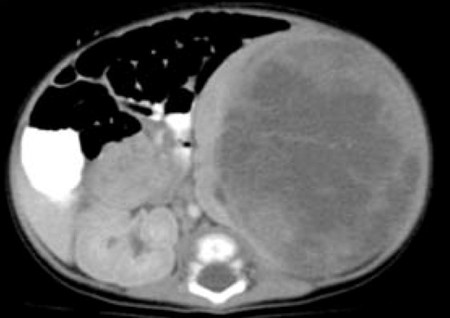
AWilms' tumor(12%)
BNeuroblastoma(7%)
CMesoblastic nephroma(76%)
DNephroblastomatosis(3%)
EPediatric cystic nephroma(2%)
Your answerC
Correct answerC. Mesoblastic nephroma
Vital Concept
Mesoblastic nephroma appears as a large solid intrarenal mass on CT with variable enhancement pattern. Necrosis, hemorrhage, and calcification are uncommon features. It occurs in infants within the first 6 months of life and may show infiltration of perinephric tissues requiring wide surgical margins.
Explanation
Mesoblastic nephroma
Mesoblastic nephroma is a typically benign tumor of neonates composed primarily of fibroblasts. It is best characterized as a unilateral intrarenal solid tumor (green arrow – note the claw sign indicating the mass's renal origin) with variable internal cystic necrosis, hemorrhage, and enhancement in a neonatal patient. It may be indistinguishable from Wilms' tumor, but the age of the patient should suggest the diagnosis over Wilms' tumor. They are usually resected surgically, which is typically curative.
Incorrect Answers:
A. Wilms' tumor is a malignant tumor of the primitive metanephric blastema and is the most common abdominal neoplasm in pediatric patients aged 1 to 8 years old, peaking at age 3. It is associated with deletion of a tumor suppressor gene on chromosome 11. They typically appear as large masses with heterogeneous attenuation and signal on T1- and T2-weighted MR imaging. They enhance heterogeneously and typically have well-defined margins. They tend to cause local mass effect and displace adjacent organs and have a characteristic “claw” of contiguous normal renal tissue, indicating their primary location within the kidney. They calcify less frequently than neuroblastomas. They are associated with certain syndromes, such as Beckwith-Wiedemann syndrome, Denys-Drash syndrome, and WAGR (Wilms' tumor, aniridia, genitourinary anomalies, and cognitive impairment). They are treated with a combination of surgical resection, chemotherapy, and radiation.
B. Neuroblastomas are common malignant lesions in the pediatric population and frequently involve the adrenal medulla, retroperitoneum, or mediastinum. They are most commonly encountered in patients less than 2 years old (in contradistinction to Wilms' tumor, which peaks at age 3). Neuroblastomas are heterogeneous in appearance owing to internal hemorrhage and necrosis, with typical internal calcification. They are usually hyperintense on T2-weighted imaging and hypointense on T1-weighted imaging with heterogeneous enhancement. In contradistinction to Wilms' tumor, they tend to engulf adjacent vascular structures, rather than exerting mass effect upon them. They frequently metastasize to bone and liver. They may be imaged with Tc99m bone scan and MIBG scintigraphy for evaluation of metastatic extent.
D. Nephroblastomatosis is another form of persistent metanephric blastema in pediatric patients. It is characterized as diffuse nephrogenic rests within the renal parenchyma and is typically seen as a homogeneous rind of renal masses that surround the kidney or are dispersed within the renal parenchyma. This rind of tissue tends to enhance to a lesser degree than that seen in the remainder of the normal kidney. It is most frequently encountered during the period of infancy and may degenerate into Wilms' tumor. Therefore, regular surveillance for increase in size or the development of heterogeneity is important, as this finding could signal conversion to Wilms' tumor.
E. Pediatric cystic nephroma is a cystic renal mass that is most common between the ages of 3 months to 5 years. The typical appearance is that of a large multicystic mass with variably enhancing internal septations. They are typically benign masses that are usually treated with surgical resection, which is usually curative. However, the presence of immature elements (metanephric blastema) within the mass can confer the potential for aggressive behavior, leading to a lesion carrying a similar prognosis to that of Wilms' tumor.
Vital Concept: Mesoblastic nephroma appears as a large solid intrarenal mass on CT with variable enhancement pattern. Necrosis, hemorrhage, and calcification are uncommon features. It occurs in infants within the first 6 months of life and may show infiltration of perinephric tissues requiring wide surgical margins.
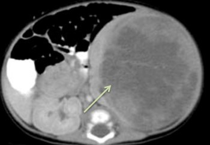
Q26
QID 22637
Correct
A 12-year-old male patient presents for follow-up imaging for known chronic abnormality. Which of the following is the diagnosis?
Correct answerB. Total anomalous pulmonary venous connection (TAPVC)
Vital Concept
: Supracardiac TAPVC shows the characteristic "snowman" or "figure-of-eight" sign on chest radiograph. The "head" of the snowman is formed by the abnormal vertical vein and dilated superior vena cava, while the "body" is formed by the enlarged right atrium and pulmonary artery. Additional findings include cardiomegaly with prominent pulmonary arteries.
Explanation
Total anomalous pulmonary venous connection (TAPVC)
The imaging finding shown here of a “snowman heart” is almost pathognomonic for supracardiac TAPVC (blue arrows). Total anomalous pulmonary venous connection (TAPVC) is characterized by failure of pulmonary veins to connect to the left atrium. There are three types:
1. Supracardiac, in which a “vertical” vein conducts blood from the lungs to the left innominate vein.
2. Cardiac, in which a common pulmonary vein brings blood from the lungs directly to the right atrium or to the coronary sinus.
3. Infracardiac, in which common pulmonary veins drain into the IVC or ductus venosus.
Incorrect Answers:
A. Hypogenetic lung syndrome is also known as scimitar syndrome and is characterized by the scimitar triad consisting of right lung hypoplasia, anomalous connection of the right inferior pulmonary vein to the inferior vena cava (scimitar vein), and systemic arterial supply to the right lower lobe. The anomalous venous drainage of the right lower lung is curved and resembles a Turkish scimitar when imaged on radiography or in the coronal plane.
C. Pulmonary sequestrations are congenital pulmonary malformations in which a portion of lung does not connect to the bronchial tree or pulmonary arteries. They may be classified as intralobar or extralobar. Extralobar sequestrations possess their own pleural coverings and are fed by a systemic artery with systemic venous drainage. Intralobar sequestrations typically do not possess their own pleural covering. They are fed by a systemic artery but typically possess pulmonary venous drainage.
D. Pulmonary slings are characterized by an abnormal branching of the left pulmonary artery from the proximal right pulmonary artery, which forms a sling around the distal trachea. The result is a posterior tracheal and anterior esophageal impression on lateral radiography and fluoroscopy. It is the only vascular ring that produces an anterior esophageal impression. Treatment includes surgical relocation of the left pulmonary artery to the main pulmonary artery, anterior to the trachea.
E. Transposition of the great vessels is an abnormal connection of the pulmonary artery to the left ventricle and the aorta to the right ventricle. The great vessels are nearly superimposed onto one another and lie in almost an identical sagittal plane. As a result, the typical finding on chest radiography is a very narrow superior mediastinum (the opposite of what is seen in this case), which is typically known as the “egg on a string” appearance.
Vital Concept:: Supracardiac TAPVC shows the characteristic "snowman" or "figure-of-eight" sign on chest radiograph. The "head" of the snowman is formed by the abnormal vertical vein and dilated superior vena cava, while the "body" is formed by the enlarged right atrium and pulmonary artery. Additional findings include cardiomegaly with prominent pulmonary arteries.
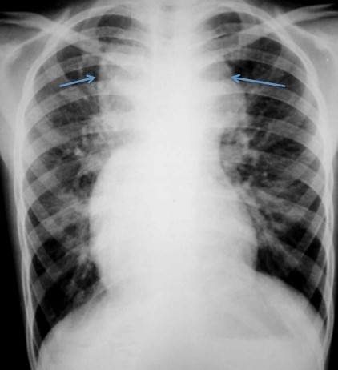
Q27
QID 56254
Correct
A 36-year-old female presented with headache and an MRA was obtained. What vessel is identified by the arrow?
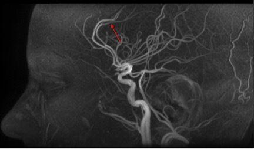
ACallosomarginal branch(22%)
BPericallosal branch(71%)
CInsular branch(1%)
DRecurrent artery of Heubner(6%)
Your answerB
Correct answerB. Pericallosal branch
Explanation
Pericallosal branch
The vessel is one of the two terminal branches of the anterior cerebral artery. The vessel extends posteriorly in the interhemispheric sulcus. The other terminal branch of the anterior cerebral artery is the callosomarginal branch, which is found more superiorly on the lateral view, and superolateral on the frontal projection. Familiarity with angiographic representation of the intracranial vasculature is a must for board examinations. One cannot rely on the presence of other anatomic structures (brain, skull, etc.) to assist with vessel identification.
Incorrect Answers:
A. The callosomarginal branch is the other terminal branch of the anterior cerebral artery, which is found more superiorly on the lateral view, and superolateral on the frontal projection.
C. Insular branch refers to a segment of multiple branches of the middle cerebral artery as it courses within the sylvian fissure, adjacent to the insular lobe.
D. Recurrent artery of Heubner is a vessel that arises from the anterior cerebral artery much more proximally, near the level of the circle of Willis.
Q28
QID 22436
Incorrect
A 26-year-old female patient presents after normal vaginal delivery with persistent elevation of beta-HCG and vaginal bleeding. Which of the following is the diagnosis?
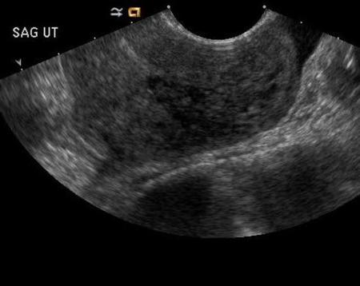
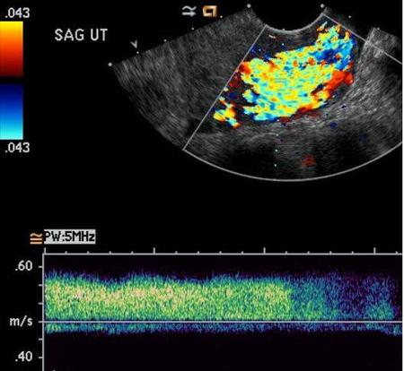
AUterine arteriovenous malformation(6%)
BUterine arteriovenous fistula(6%)
CRetained products of conception(87%)
DAdenomyosis(0%)
EUterine fibroid(0%)
Your answerB
Correct answerC. Retained products of conception
Vital Concept
Retained products of conception shows high flow vascularity because residual trophoblastic tissue maintains rich vascular supply from endometrial vessels. Persistently elevated beta-hCG occurs because it continues to be produced by the retained trophoblastic tissue. The vascularity originates from endometrium and extends into myometrium, unlike arteriovenous malformations where flow centers in myometrium.
Explanation
Retained products of conception
Despite the temptation to diagnose arteriovenous malformation or fistula in the setting of marked Doppler flow (yellow arrow) and low-resistance waveform (red arrow), one should always entertain the diagnosis of retained products of conception, especially with associated poor visualization/mildly hypoechoic irregularity of the endometrium in the lower uterine segment, as shown here on grayscale. Retained chorionic villi frequently appear hypoechoic on greyscale ultrasound with marked internal Doppler signal and may mimic vascular malformation or fistula. The key to the diagnosis is the persistently elevated beta-HCG that should sway one toward a diagnosis of the much more common entity, retained products of conception. If vascular lesion is entertained on sonographic evaluation, the patient may undergo unnecessary angiography and/or embolization, which is not without risk.
Incorrect Answers:
A and B. Uterine arteriovenous fistulae are a rare complication of dilatation and curettage in which an abnormal direct connection between artery and vein is formed as a result of vascular trauma. Frequently, ultrasound will depict a markedly vascular mass-like lesion in the uterine wall. However, these lesions are quite rare and have a similar appearance to that of retained products, and many times when uterine AVF is considered, the diagnosis will be simple retained products of conception. Similarly, arteriovenous malformation can be seen in a similar clinical setting, with imaging demonstrating early draining venous structures during the arterial phase of contrast administration with an associated vascular nidus.
D. Uterine adenomyosis is typically seen as a thickened junctional zone with internal anechoic cystic changes in an enlarged, “boggy” uterus. On MRI, T2-weighted imaging demonstrates thickening of the junctional zone with associated hyperintense cystic lesions on T2-weighted imaging. The junctional zone is best seen as a hypointense band of tissue within the uterine corpus on T2-weighted images. Thickening of the junctional zone greater than 12 millimeters with associated T2 hyperintense cystic areas is diagnostic of this entity. It frequently presents as pelvic pain and discomfort with associated dysfunctional uterine bleeding and a clinically palpable, boggy uterus.
E. Uterine leiomyomas, or fibroids, are frequently seen as heterogeneously hypoechoic masses on greyscale sonography. MRI demonstrates hypointense mass lesions of the uterine wall on T2 weighted images. They may be submucosal, intramural, or subserosal in location. When submucosal or subserosal, they may be pedunculated or sessile in appearance. They may degenerate via multiple mechanisms including hemorrhagic, calcific, hyaline, myxoid, or carneous mechanisms. Degenerated or degenerating leiomyomas may be indistinguishable from leiomyosarcomas.
Vital Concept: Retained products of conception shows high flow vascularity because residual trophoblastic tissue maintains rich vascular supply from endometrial vessels. Persistently elevated beta-hCG occurs because it continues to be produced by the retained trophoblastic tissue. The vascularity originates from endometrium and extends into myometrium, unlike arteriovenous malformations where flow centers in myometrium.
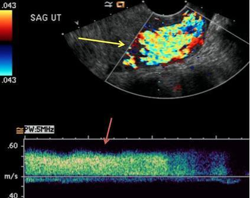
Q29
QID 21561
Correct
A 63-year-old female patient presents with a new-onset of right lower extremity swelling and pain. The acronym SFV refers to the former nomenclature of the superficial femoral vein, now commonly called the femoral vein. Which of the following is the most likely diagnosis?
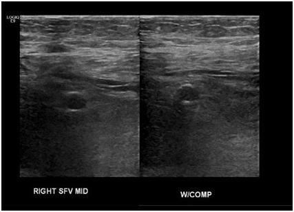
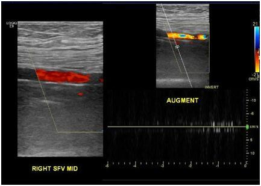
APatent femoral vein(2%)
BDeep venous thrombosis of femoral vein(92%)
CSuperficial thrombophlebitis of femoral vein(4%)
DLower extremity cellulitis(1%)
ERight femoral artery stenosis(0%)
Your answerB
Correct answerB. Deep venous thrombosis of femoral vein
Explanation
Deep venous thrombosis of femoral vein
The findings of internal echogenic material, venous noncompressibility (yellow arrow), and lack of flow augmentation (white arrow) with augmenting maneuvers such as foot dorsiflexion or squeezing of the calf, are all predictive of the presence of deep venous thrombosis.
These patients are at risk for pulmonary embolism and unless there is a contraindication, they should be treated with therapeutic anticoagulation. If anticoagulation is contraindicated, an inferior vena cava (IVC) filter should be considered.
Incorrect Answers:
A. The femoral vein is not patent, as there is no internal flow, no augmentation, and it is not compressible.
C. The femoral vein is, in fact, a deep vein. This terminology can be confusing, so it is important to communicate the findings accurately in order that the patient is managed appropriately, as superficial thrombophlebitis is frequently treated symptomatically and no anticoagulation is given.
D. Lower extremity cellulitis may well be present, as there is marked subcutaneous edema visible on the given images. However, deep venous thrombosis is a much more critical finding and should be communicated.
E. The femoral artery demonstrates normal flow throughout its imaged length, and there is no gross filling defect to detect stenosis. If the stenosis is to be diagnosed on Doppler ultrasound, velocity measurements should be measured proximal and distal to suspected stenosis. A significant increase in velocity at/immediately distal to the suspected stenosis should raise suspicion for hemodynamically significant stenosis. As flow downstream of a stenosis becomes less turbulent and the vessel returns to wider caliber, tardus parvus waveform should become more apparent.
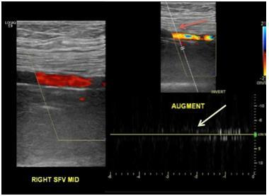
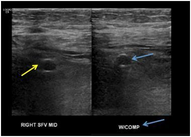
Q30
QID 5106
Incorrect
Which of the following fetal measurements is most accurate at 15 weeks for predicting gestational age?
AThoracic-to-abdominal ratio(1%)
BCrown-rump length(23%)
CCorrected BPD(50%)
DAbdominal circumference(8%)
EFemur length(17%)
Your answerE
Correct answerC. Corrected BPD
Vital Concept
The most accurate second trimester measurements for dating are the corrected biparietal diameter (BPD) and the head circumference.
Explanation
Corrected BPD
Head circumference (HC) and biparietal diameter (BPD) are better for fetal dating in the early second trimester because the fetal head's growth is relatively stable and less influenced by external factors like nutrition or placental efficiency during this period.
Unlike abdominal circumference (AC) or femur length (FL), which can quickly reflect issues such as growth restriction or overgrowth, head growth demonstrates more consistent proportionality to true gestational age, making these measurements more reliable for dating.
Incorrect Answers:
A. The thoracic-to-abdominal ratio is not routinely measured but can be a helpful tool in problem-solving for conditions such as skeletal dysplasia, oligohydramnios, and others.
B. Crown-rump length should not be used in the second trimester because the fetus is capable of flexing, which makes the measurement less accurate. This metric is typically reserved for the first trimester.
D. E. Abdominal circumference and femur length are also frequently measured but are not as accurate in predicting gestational age as biparietal diameter and head circumference.
Vital Concept: The most accurate second trimester measurements for dating are the corrected biparietal diameter (BPD) and the head circumference.
Q31
QID 47095
Correct
A 58-year-old male patient with cirrhosis and a known diagnosis of hepatocellular carcinoma presents with new vague abdominal pain. Which of the following is the diagnosis?
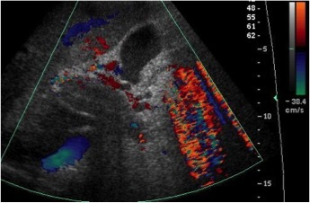
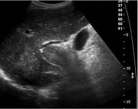
AAcute cholecystitis(1%)
BSubcapsular hemorrhage(2%)
CHematobilia(1%)
DHepatic vein thrombosis(3%)
EPortal vein thrombosis(93%)
Your answerE
Correct answerE. Portal vein thrombosis
Vital Concept
Portal vein thrombosis commonly complicates cirrhosis and appears on ultrasound as hyperechoic luminal content within an expanded portal vein with absent color flow Doppler signal, making ultrasound the first-line diagnostic modality.
Explanation
Portal vein thrombosis
The color Doppler image taken at the level of the porta hepatis shows a large and echogenic clot occluding the portal vein (triangle). Note the absence of flow and also the absence of cavernous transformation/ collaterals, indicating that this is a relatively acute process. Portal vein thrombosis occurs in a variety of clinical contexts, and when acute, can be a life-threatening condition. It may be either bland or malignant. All of the answer choices listed may occur in the setting of hepatocellular carcinoma. However:
Incorrect Answers:
A. Cholecystitis may occur secondary to obstruction from mass effect. In this case, the gallbladder (star) appears normal.
B. There is no hypoechoic subcapsular fluid present to indicate hemorrhage.
C. Hematobilia would appear as echogenic material within the biliary system.
D. The hepatic vein is not depicted here.
Vital Concept: Portal vein thrombosis commonly complicates cirrhosis and appears on ultrasound as hyperechoic luminal content within an expanded portal vein with absent color flow Doppler signal, making ultrasound the first-line diagnostic modality.
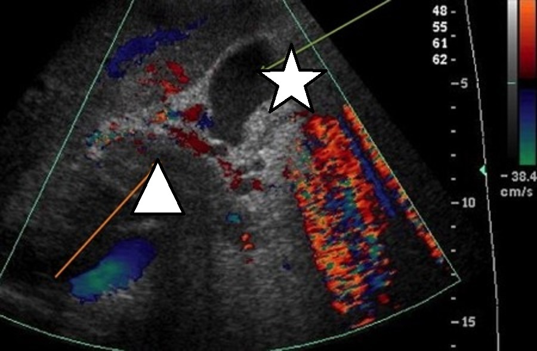
Q32
QID 49613
Correct
A 69-year-old asymptomatic female patient presents with a stable screening mammogram for 18 years. Left breast mammogram craniocaudal and mediolateral oblique projections demonstrate two round masses with radiolucent centers at 12 o'clock position anteriorly. Which of the following statements is true?
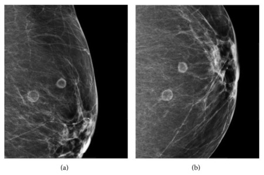
AThis mass requires cyst aspiration.(1%)
BThis mass requires core biopsy.(14%)
CThis is consistent with fibrocystic changes.(3%)
DThis is consistent with fat necrosis.(82%)
Your answerD
Correct answerD. This is consistent with fat necrosis.
Vital Concept
Smooth curvilinear calcifications in oil cysts represent benign fat necrosis evolution and are pathognomonic when seen in an appropriate clinical context. Unlike suspicious malignant calcifications (branching, pleomorphic, clustered), these smooth patterns require no further workup and indicate normal post-traumatic or post-surgical healing.
Explanation
This is consistent with fat necrosis.
On mammography, common findings of fat necrosis are oil cysts (as shown above), coarse calcifications, focal asymmetries, microcalcifications, or spiculated masses. Lipid cysts are pathognomonic of benign fat necrosis, although the fibrous rim of the cyst may calcify or collapse and may produce an appearance that is mammographically indeterminate and requires biopsy to exclude malignancy.
Calcifications may form in the cyst walls and are frequently seen on mammography, usually as smooth and round or curvilinear. Calcifications may be the only findings but may be of concern if they are branching, rod-like, or angular. The clustered, pleomorphic microcalcifications may be indistinguishable from those of malignancy.
When fibrosis is present, but the radiolucent fat is not completely replaced; the oil cyst may have thickened, irregular, spiculated, or ill-defined walls. Fibrosis may lead to the replacement of the radiolucent necrotic fat, resulting in the appearance of a focal asymmetric density, a focal dense mass, or an irregular spiculated mass on mammography. Oil cysts with fat-fluid levels or serous-hemorrhagic contents, collapsed cysts, and cysts containing spherical densities are all atypical features of fat necrosis.
Incorrect Answers:
A. B. Aspiration and core biopsy are not suggested for fat necrosis, as discussed above.
C. Fibrocystic change of the breast (also known as diffuse cystic mastopathy) is a benign alteration in the terminal ductal lobular unit of the breast with or without associated fibrosis. It is seen as a wide spectrum of altered morphology in the female breast from innocuous to those associated with risk of carcinoma.
On mammography, breasts show heterogeneous and usually dense parenchyma. Partially circumscribed masses may be present reflecting cysts. They are often seen as tea-cup, low-density round calcifications in multiple lobes.
Vital Concept: Smooth curvilinear calcifications in oil cysts represent benign fat necrosis evolution and are pathognomonic when seen in an appropriate clinical context. Unlike suspicious malignant calcifications (branching, pleomorphic, clustered), these smooth patterns require no further workup and indicate normal post-traumatic or post-surgical healing.
Q33
QID 56220
Correct
Which of the following anatomic structure is marked by the yellow “X”?
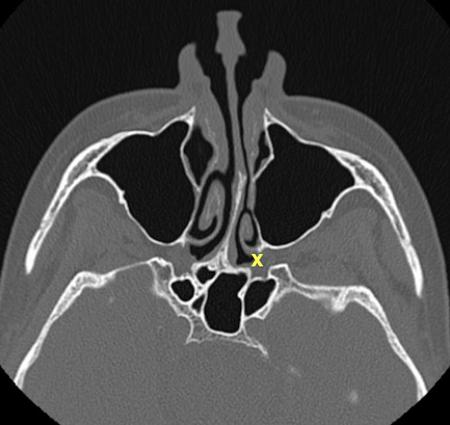
ASphenopalatine foramen(71%)
BPterygopalatine fossa(20%)
CInferior orbital fissure(1%)
DPterygomaxillary fissure(9%)
Your answerA
Correct answerA. Sphenopalatine foramen
Vital Concept
The sphenopalatine foramen is the medial opening from the pterygopalatine fossa to the nasal cavity, located at the junction of the posterior wall of the maxillary sinus and the palatine bone.
Explanation
Sphenopalatine foramen
Located high in the posterolateral wall of the nose, the sphenopalatine foramen connects the lateral nasal cavity to the pterygopalatine fossa (blue X). Although this may seem very straightforward, normal anatomy is a testable subject according to the ABR syllabus for the neuroradiology sections. The head and neck are well-suited to test questions due to their intrinsic complexity. Familiarity with the major skull base foramina and maxillofacial passages is necessary.
Incorrect Answers:
B. Pterygopalatine fossa (blue X) is the major junction between the nasal cavity, nasopharyngeal masticator space, orbit, and middle cranial fossa. It does communicate with the sphenopalatine foramen, but it is not the structure annotated with the yellow “X”.
C. Inferior orbital fissure (pink X) is not included on the axial image and is noted with the pink “x” on the coronal image.
D. Pterygomaxillary fissure is the lateral opening into the pterygopalatine fossa.
Vital Concept: The sphenopalatine foramen is the medial opening from the pterygopalatine fossa to the nasal cavity, located at the junction of the posterior wall of the maxillary sinus and the palatine bone.
Q34
QID 56281
Incorrect
A 57-year-old diabetic male patient presents to their primary care physician’s office with swelling/erythema of the left foot and ulceration plantar aspect of the first toe. The physician suspects osteomyelitis. Initial radiographs are negative for osteomyelitis. Which of the following imaging studies is the next most appropriate recommendation?
AFollow-up radiographs in 6 to 8 weeks(1%)
BContrast-enhanced CT(1%)
CMRI(96%)
DNuclear medicine bone scan(2%)
Your answerB
Correct answerC. MRI
Vital Concept
Magnetic resonance imaging is the next imaging step for suspected osteomyelitis with negative radiographs, as substantial bone matrix destruction is required before lytic changes appear on plain films. Magnetic resonance imaging has high sensitivity for early detection of marrow edema and infection.
Explanation
MRI
In the setting of clinically suspected osteomyelitis and/or associated soft tissue infection, if initial radiographs are negative, MRI is the imaging modality of choice. MRI can delineate the extent of osteomyelitis, and the presence or absence of soft tissue infection including myositis or abscess, and other clinically important findings such as soft tissue necrosis and ulceration.
Incorrect Answers:
A. Although follow-up radiographs may demonstrate findings suggestive of osteomyelitis such as erosion and periosteal reaction, a time period of six to eight weeks may allow for significant progression of infection and the development of complications.
B. Due to limited contrast resolution, CT is not recommended for the evaluation of the bone marrow or surrounding soft tissues in the setting of suspected infection.
D. Prior to MRI, nuclear medicine bone scan was the mainstay of advanced imaging for osteomyelitis. However, there is a very poor spatial resolution with nuclear medicine bone scan compared to MRI, and no information of the surrounding soft tissues can be obtained with a bone scan. Therefore, the use of nuclear medicine for bone scans is very limited.
Vital Concept: Magnetic resonance imaging is the next imaging step for suspected osteomyelitis with negative radiographs, as substantial bone matrix destruction is required before lytic changes appear on plain films. Magnetic resonance imaging has high sensitivity for early detection of marrow edema and infection.
Q35
QID 2838
Incorrect
Which of the following statements is true regarding the development of adjacent segment disease following posterior spinal fusion surgery?
AMore common below the level of fusion relative to the level above the fusion(19%)
BOccurs in approximately 50% of patients(12%)
CMore common in the lumbar spine than the cervical spine(52%)
DCommonly occurs in the thoracic spine(2%)
ECommonly necessitates reoperation(14%)
Your answerA
Correct answerC. More common in the lumbar spine than the cervical spine
Vital Concept
The lumbar spine is most commonly affected by adjacent segment disease due to its combination of high fusion surgery volume and greatest mechanical stress on the spine.
Explanation
More common in the lumbar spine than the cervical spine
The lumbar spine is most frequently affected by adjacent segment disease (ASD) because it bears the greatest mechanical load and has the highest volume of fusion surgeries. The weight-bearing nature of the lumbar spine creates increased biomechanical stress on adjacent unfused segments, accelerating degeneration.
Incorrect Answers:
A. ASD more commonly affects the segment above the fusion, which in lumbar cases involves highly mobile levels like L3-L4 or L4-L5.
B. ASD occurs in just under 20% of patients at 5 years and just under 40% of patients at 10 years.
D. It rarely occurs in the thoracic spine, presumably because the thoracic spine has relatively little mobility compared to cervical and lumbar levels.
E. Overall reoperation rate due to adjacent segment disease is less than 10%.
Vital Concept: The lumbar spine is most commonly affected by adjacent segment disease due to its combination of high fusion surgery volume and greatest mechanical stress on the spine.
Q36
QID 5124
Incorrect
A 45-year-old male presents with chronic shortness of breath and recurrent respiratory tract infection. Which of the following is the diagnosis?
ARelapsing polychondritis(2%)
BCystic fibrosis(9%)
CMounier-Kuhn syndrome(83%)
DTracheopathia osteochondroplastica(5%)
Your answerB
Correct answerC. Mounier-Kuhn syndrome
Vital Concept
Mounier-Kuhn syndrome shows tracheobronchomegaly with tracheal diameter greater than 3 cm and mainstem bronchi greater than 2.4 cm. The pathognomonic corrugated appearance from diverticula between cartilaginous rings results from connective tissue abnormalities.
Explanation
Mounier-Kuhn syndrome
Mounier-Kuhn syndrome or tracheobronchomegaly is due to loss of the elastic and muscle fibers in the wall of the trachea and bronchi. On CT there is usually impressive dilatation of the trachea and bronchi, as seen here. The trachea is usually dilated more than 3 cm above the level of the aortic arch and will collapse on expiratory imaging.
Incorrect Answers:
A. Relapsing polychondritis is a chronic multi-system disease secondary to recurrent inflammation of the body cartilaginous structures. CT will usually demonstrate thickening of the anterior and lateral walls of the trachea and sparing of the posterior wall. Bronchiectasis is uncommon. Dense tracheal cartilage calcifications are a common finding.
B. Cystic fibrosis will predominantly involve the upper lobes leading to cystic bronchiectasis and pulmonary fibrosis. The trachea is usually not involved in cystic fibrosis.
D. Tracheopathia osteochondroplastica is a benign condition secondary to airway wall thickening and development of osseous and/or cartilaginous nodules in the submucosa of the trachea and bronchi. The process characteristically spares the posterior tracheal wall.
Vital Concept: Mounier-Kuhn syndrome shows tracheobronchomegaly with tracheal diameter greater than 3 cm and mainstem bronchi greater than 2.4 cm. The pathognomonic corrugated appearance from diverticula between cartilaginous rings results from connective tissue abnormalities.
Q37
QID 37630
Correct
A 32-year-old female with weight loss and new onset atrial fibrillation is being evaluated with 24-hour radioactive iodine uptake and an I-123 thyroid scan. Which of the following is the diagnosis?
AToxic autonomous nodule(0%)
BToxic multinodular goiter(1%)
CGraves’ disease(98%)
DSubacute thyroiditis(1%)
EMarine-Lenhart syndrome(0%)
Your answerC
Correct answerC. Graves’ disease
Explanation
Graves’ disease
All of the listed answer choices can lead to clinical symptoms of hyperthyroidism such as weight loss, heat intolerance, cardiac arrhythmias, and restlessness. The static gamma camera image taken from an I-123 thyroid scan at 24 hours demonstrates diffusely increased activity throughout the thyroid gland (green arrows). One can also see the pyramidal lobe well (yellow arrow), which is typically not seen. Graves' disease is an autoimmune disorder caused by antibodies against the thyrotropin (TSH) receptors on the cell surface of the thyroid follicle. By mimicking TSH, the thyroid receptor antibodies excessively stimulate the thyroid cells, which in turn increase thyroid hormone production with its associated sequelae. Serum thyroid hormone levels are elevated, and the pituitary TSH level is appropriately suppressed.
Incorrect Answers:
A. Toxic autonomous nodule refers to hyperthyroidism caused by one or two hyperfunctioning nodules in the thyroid acting independently of the normal pituitary-thyroid control mechanism.
B. Toxic multinodular goiter, also known as Plummer disease, is nodular enlargement of the thyroid gland in which several of these nodules gradually form areas of hyperplasia that eventually become autonomously functioning, leading to hyperthyroidism. Scintigraphy demonstrates multiple nodular areas, both cold and hot, resulting in an overall heterogeneous appearance.
D. Subacute thyroiditis, also known as subacute granulomatous thyroiditis, giant cell thyroiditis, or de Quervain thyroiditis, is a thyrotoxic condition characterized by neck pain, fever, and a tender diffuse goiter. It is presumed to be caused by a viral infection and is usually preceded by an upper respiratory tract infection. A post-viral inflammatory response leads to giant cell infiltration into the thyroid follicles, ultimately resulting in follicular swelling and disruption with release of stored thyroid hormone into the circulation. The radioactive iodine uptake is very low since the affected thyroid is unable to transport or organify iodine.
E. Marine-Lenhart syndrome is a Graves' disease variant in which Graves' disease coexists with TSH-dependent cold thyroid nodules, which are not seen here.
Q38
QID 18077
Correct
What is the radiation level measurement/detection device shown?
AIonization detector(4%)
BDose calibrator(3%)
CGeiger-Müller detector(1%)
DWell counter/thyroid uptake probe(91%)
Your answerD
Correct answerD. Well counter/thyroid uptake probe
Vital Concept
Well counters are fixed instruments where samples are inserted into the crystal well, requiring minimal movement/adjustability. Thyroid probes are highly adjustable and pivotable, mounted on a movable arm to position properly over patients' thyroid glands for uptake measurements. The adjustability of the thyroid probe enables accommodation of varying patient sizes and positions.
Explanation
Well counter/thyroid uptake probe
The scintillation well counter and thyroid uptake probe are examples of scintillation spectrometers (which are not gas-filled chambers) used in nuclear medicine. The well counter is used to measure the activity concentration of in vitro blood or urine samples. The uptake probe is typically used to measure thyroid uptake of iodine-123 or iodine-131 relative to a calibrated standard capsule.
Incorrect Answers:
A. The ionization detector is a gas-filled detector that is used for radiation survey. It is less sensitive but more accurate (the rate of ion pairs development is proportional to the radiation being detected) than the Geiger-Müller detector (the rate of ion pairs development is an amplification of factors of 10 of the radiation being detected). Both are relatively inefficient for the detection of x-ray and gamma ray but very efficient in detecting charged particles.
B. The dose calibrator is another form of a gas-filled detector. It is used to measure the radiopharmaceutical dose before administering it to the patient. It has a well configuration, which improves the geometrical efficiency and hence the accuracy of the measurement.
C. The Geiger-Müller detector with a pancake probe is ideal for low-level radiation detection secondary to the large surface area of the probe. It is another form of a gas-filled detector. It has a long dead time.
Vital Concept: Well counters are fixed instruments where samples are inserted into the crystal well, requiring minimal movement/adjustability. Thyroid probes are highly adjustable and pivotable, mounted on a movable arm to position properly over patients' thyroid glands for uptake measurements. The adjustability of the thyroid probe enables accommodation of varying patient sizes and positions.
Q39
QID 5084
Correct
Which of the following is the name for the radiographic findings below?
ARolando fracture(81%)
BBoxer’s fracture(1%)
CJersey finger(0%)
DBennett fracture(16%)
EMallet finger(0%)
Your answerA
Correct answerA. Rolando fracture
Vital Concept
A Rolando fracture has a comminuted intraarticular fracture at the first metacarpal base versus a Bennett fracture which is an oblique noncomminuted intra-articular fracture in the same location.
Explanation
Rolando fracture
The radiograph demonstrates a Rolando fracture, a comminuted intra-articular fracture of the first metacarpal base with extension of comminution to the carpal-metacarpal joint (arrows). In addition to the volar lip fracture, which is seen in Bennett's fracture, there is also a large dorsal fragment. This can present as a Y- or T-shaped intra-articular fracture. The presence of comminuted intraarticular fracture distinguishes this entity from a Bennett fracture which is an oblique noncomminuted intra-articular fracture. Surgical fixation is generally indicated except in cases of severe comminution.
Incorrect Answers:
B. The term "boxer's fracture" refers to a fracture of the distal fourth or fifth metacarpal metadiaphysis with volar angulation of the distal fracture fragment. As the name suggests, these fractures typically result from direct impact of a closed fist upon a hard object. This entity is common in the setting of a punch injury, and the majority of patients are male, accounting for greater than 90% of cases. The volar angulation of the distal fracture fragment is a product of force from interosseous muscles and imbalance of extrinsic tendons. In cases of severe fracture angulation, open reduction and internal fixation are required to preserve function.
C. The term "jersey finger" refers to rupture or avulsion of the flexor digitorum profundus secondary to forced hyperextension of a maximally flexed distal interphalangeal (DIP) joint. The term may have arisen from American football players who sustained the injury by clutching an opponent's jersey while the opponent forcefully pulled away. The fourth digit is most commonly involved, and patients present with inability to flex the affected DIP and with slight extension at rest.
D. A Bennett fracture is an oblique intra-articular fracture of the first metacarpal base (carpal-metacarpal), leaving a small fracture fragment at the volar base. This term is not to be confused with a Bennett lesion, which refers to potentially symptomatic heterotopic bone near the insertion of the inferior glenohumeral ligament, most often seen in baseball pitchers. Both of these entities were named for Edward Hallaran Bennett, an Irish surgeon.
E. "Mallet finger," also known as baseball finger or drop finger, refers to rupture or avulsion of the terminal extensor tendon of a digit. This injury results from forced flexion of an extended DIP joint, as seen when a baseball strikes a fingertip. Patients present with slight distal interphalangeal joint flexion at rest and an inability to extend the joint.
Vital Concept: A Rolando fracture has a comminuted intraarticular fracture at the first metacarpal base versus a Bennett fracture which is an oblique noncomminuted intra-articular fracture in the same location.
Q40
QID 4970
Correct
In the graph shown below depicting a filtered spectrum of x-ray, what do the vertically-oriented spikes between 55 and 70 keV represent?
ABremsstrahlung(3%)
BCharacteristic radiation(90%)
CPhotoelectric effect(6%)
DHeel effect(0%)
Your answerB
Correct answerB. Characteristic radiation
Vital Concept
Characteristic radiation occurs when incident electrons eject inner shell electrons, creating vacancies filled by outer shell electrons that emit x-ray photons with energies equal to the binding energy differences between the involved electron shells. Discrete monoenergetic peaks are produced, superimposed on the continuous bremsstrahlung spectrum that are specific to the target element and only occur when tube voltage exceeds the inner shell binding energy.
Explanation
Characteristic radiation
These "spikes" in keV values represent x-rays generated by characteristic radiation. Characteristic radiation is explained as follows: when the energy of an electron incident on the target exceeds the binding energy of an electron of a target atom, it is energetically possible for a collisional interaction to eject the electron and ionize the atom. The ejected electron from the collisional interaction leaves an unfilled electron shell in the atom, which is energetically unstable. An outer shell electron with less binding energy (since it was further away from nucleus to begin with) will fill the vacancy. As this electron transitions to a lower energy state, the excess energy can be released as a characteristic x-ray photon with energy equal to the difference between the binding energies of the electron shells.
Incorrect Answers:
A. The continuous spectrum of x-rays due to bremsstrahlung is depicted by the sloping curved line extending from 10 keV to 90 keV.
C. Photoelectric effect pertains to electrons ejected from atoms by incident photons. The vacancy created in the electron shell is what allows for a lower energy shell electron to transition to a shell closer to the nucleus and subsequently generate characteristic x-rays.
D. Heel effect refers to reduction in x-ray beam intensity toward the anode side of the x-ray field secondary to attenuation differences related to the thickness of the anode.
Vital Concept: Characteristic radiation occurs when incident electrons eject inner shell electrons, creating vacancies filled by outer shell electrons that emit x-ray photons with energies equal to the binding energy differences between the involved electron shells. Discrete monoenergetic peaks are produced, superimposed on the continuous bremsstrahlung spectrum that are specific to the target element and only occur when tube voltage exceeds the inner shell binding energy.
Q41
QID 37388
Correct
A 36-year-old patient presented to the breast imaging center with a palpable left breast mass. Which of the following is considered a malignant feature on ultrasound?
AA lesion that is wider than tall(1%)
BAngular margins(97%)
CHomogeneous echogenic echotexture(0%)
D2 or 3 gentle lobulations(1%)
EEllipsoid shape(0%)
Your answerB
Correct answerB. Angular margins
Vital Concept
The key-features of malignant breast lesions are a hypoechoic mass, mostly irregular shape, sometimes round or oval, with orientation not parallel to skin, indistinct border, sometimes with halo, posterior shadowing, and small calcifications
Explanation
Angular margins
Angular margins on breast ultrasound describe sharp, pointed interfaces between a mass (blue arrow) and surrounding tissue, characterized by abrupt angles (green arrow) rather than smooth contours at the lesion boundary. This morphologic feature is considered suspicious for malignancy because it reflects the invasive growth pattern of cancer cells infiltrating normal breast parenchyma in an irregular, non-expansile manner. Masses with angular margins typically warrant at least BI-RADS category 4 assessment requiring tissue sampling, as this finding has high positive predictive value for invasive carcinoma and contrasts with the smooth, well-defined boundaries seen in benign lesions like fibroadenomas.
Incorrect Answers:
A. Malignant lesions are taller-than-wide in orientation
C. Benign lesions have a homogeneous echogenic echotexture.
D. Benign U/S features include few (two or three) gentle lobulations
Vital Concept: The key-features of malignant breast lesions are a hypoechoic mass, mostly irregular shape, sometimes round or oval, with orientation not parallel to skin, indistinct border, sometimes with halo, posterior shadowing, and small calcifications
Q42
QID 38151
Correct
A 45-year-old male patient presents to the emergency department with sudden onset of left flank pain. A urinalysis is performed and is positive for red blood cells. An abdominal ultrasound with survey views of the kidneys is performed. Which of the following is the next step in management?
AUrology consultation(6%)
BAntibiotic treatment(0%)
CMultiphase CT(9%)
DNoncontrast CT(84%)
ENo further workup is necessary(1%)
Your answerD
Correct answerD. Noncontrast CT
Explanation
Noncontrast CT
The longitudinal ultrasound of this kidney demonstrates moderate hydronephrosis (blue arrows) and dilatation of the renal pelvis (red arrow). Given the clinical presentation and this sonographic appearance, the most likely diagnosis is urolithiasis. This entity is very common, with a lifetime incidence in as many as 5% of women and 12% of males. Most patients tend to present in the 4th through 7th decades. Although some renal stones remain asymptomatic, most will result in pain. Small stones that arise in the kidney are more likely to pass into the ureter where they may result in renal colic. Accompanying microscopic hematuria is common. Ultrasound is frequently the first investigation of the renal tract. It is less sensitive than CT or radiographs but is inexpensive and does not expose the patient to radiation. Still, ultrasound is often able to identify calculi. This is important not just to confirm the diagnosis, but for management. Even if the stone has recently passed, the collecting system may remain dilated for some time thereafter. CT is the next step to identify obstructing calculi, if present, and their size and location. IV contrast is not used, as it may obscure the dense stone.
Incorrect Answers:
A. Approximately 90% of stones less than 4mm are likely to pass down the ureter and into the bladder, and thus often require no more than analgesia and hydration. As such, urological consultation is not usually necessary.
B. Untreated cases, recurrent stones, or cases where the stone does not pass can lead to infection that may require antibiotics, percutaneous nephrostomy, and urological consultation.
C. In cases where CT is utilized for evaluation of nephro-urolithiasis, it is performed without contrast, and on a similar question on a board exam could be a viable answer choice given the ability to scroll up and down and assess the ureters on the CT scan with ease in comparison with the ultrasound. If CT without contrast does not explain the cause of the pain or if further assessment is required, then CT with contrast may be used. Multiphase CT is reserved for renal mass workup or CT urography in the workup of gross, not microscopic, hematuria.
E. To perform no further workup is incorrect.
Q43
QID 43754
Correct
A 56-year-old patient injured their foot after awkwardly stepping off a curb. What tendon is involved in this injury?
APeroneus longus(9%)
BPeroneus brevis(84%)
CAbductor digiti minimi(3%)
DExtensor digitorum brevis(2%)
ETibialis posterior(2%)
Your answerB
Correct answerB. Peroneus brevis
Explanation
Peroneus brevis
The radiograph shows a minimally displaced avulsion fracture at the base of the fifth metatarsal. This is the site of insertion of the peroneus brevis tendon. This accounts for over 90% of base fifth metatarsal fractures. The proposed mechanism is forcible inversion of the foot in plantar flexion, as may occur while stepping off a curb (as in this case) or climbing steps.
Incorrect Answers:
A. The peroneus longus is the other long lateral tendon. It runs with the peroneus brevis proximally. Distally it inserts at the lateral (fibular) side of the base of the first metatarsal and the lateral aspect of the medial cuneiform.
C. The abductor digiti minimi originates at the lateral process of the calcaneus and inserts onto the base of the fifth proximal phalanx.
D. The extensor digitorum brevis originates at the superolateral surface of the calcaneus and inserts onto the first proximal phalanx. It is implicated in calcaneal avulsion fractures, and is seen as a small, avulsed fragment at the lateral aspect of the calcaneus, well inferior to the lateral malleolus.
E. The tibialis posterior is one of the long medial tendons. It is the most anterior structure in the tarsal tunnel, and it inserts at the medial aspect of the navicular. It also sends out fibers to the plantar aspect of the bases of the second through fourth metatarsals, the second and third cuneiforms, and the cuboid.
Q44
QID 58672
Correct
A 20-year-old non-pregnant female with constant low back pain had an MRI of the lumbar spine performed, the images of which are shown. What is the diagnosis?
ASerous cystadenoma of the ovary(1%)
BMucinous cystadenoma of the ovary(1%)
CBrenner tumor of the ovary(1%)
DDermoid of the ovary(98%)
Your answerD
Correct answerD. Dermoid of the ovary
Explanation
Dermoid of the ovary
Dermoid cyst of the ovary, also called mature cystic teratoma, is the most common tumor of germ cell origin. The tumor constitutes all three germ layers; ectodermal components predominate, justifying the term “dermoid." Ovarian dermoids are usually asymptomatic and the diagnosis is incidental as in this case. Histologically, dermoids are commonly unilocular (88%) and filled with sebaceous material. Hair follicles, skin glands, muscle, and other tissues lie within the wall. There is usually a raised protuberance projecting into the cyst cavity known as the Rokitansky nodule. Most of the hair typically arises from this protuberance.
When bone or teeth are present, they tend to be located within this nodule. Adipose tissue is present in 67%–75% of cases, and teeth are seen in 31%. At CT, fat attenuation within a cyst, with or without calcification in the wall, is diagnostic for mature cystic teratoma. On MRI, sebaceous component of the dermoid cyst appears T1 hyperintense similar to fat, with variable signal intensity on T2 weighted images. This combination of differing T1 and T2 hyperintensities is not specific for fat. Hemorrhage could have a similar appearance, therefore differentiation between the two is essential to make the diagnosis of dermoid cyst. Fat suppression and in and out of phase MR techniques help in distinguishing fat from hemorrhage. The most common complication of dermoid cyst is ovarian torsion. The other less common but important complication is rupture of the dermoid, which leads to chemical peritonitis due to the spillage of sebaceous contents. Malignant tranformation is the third complication, of which squamous cell carcinoma is the most common.
Incorrect Answers:
A. Epithelial ovarian neoplasms represent 60% of all ovarian neoplasms and 85% of malignant ovarian neoplasms. The two most common types of epithelial tumors are serous and mucinous, of which serous neoplasms are the most common type in benign and malignant categories. The typical imaging appearance of a serous cystadenoma of the ovary is unilocular cyst (T1 hypointense and T2 hyperintense), and has papillary projections along the periphery. Serous cystadenocarcinoma is the malignant form, which appears aggressive with a more solid component.
B. Mucinous cystadenoma of the ovary is the second most common epithelial neoplasm. It is typically large and multicystic with T2 hyperintense and T1 hyperintense (mucinous) contents. Presence of soft tissue nodularity raises suspicion for cystadenocarcinoma.
C. Brenner tumor is a rare epithelial tumor of the ovary. It represents about 2%–3% of ovarian tumors and is rarely malignant. Brenner tumors are usually smaller (< 2 cm in size) and manifest as a multilocular cystic mass with a solid component or as a small solid mass. At T2-weighted MR imaging, the dense fibrous stroma demonstrates lower signal intensity, similar to that of a fibroma. Brenner tumors are associated with other ovarian tumors in 30% of cases.
Q45
QID 57402
Correct
A 55-year-old female with a history of diarrhea for several years presented for evaluation of new-onset abdominal pain. Magnetic resonance imaging (MRI) of the abdomen was performed as part of her workup. The images are shown below. What is your diagnosis?
AAcute pancreatitis(1%)
BChronic pancreatitis(3%)
CPancreatic lipomatosis(92%)
DPancreatic agenesis(4%)
Your answerC
Correct answerC. Pancreatic lipomatosis
Explanation
Pancreatic lipomatosis
T1 and T2 images demonstrate diffuse fatty infiltration of the pancreas (yellow arrow), which is known as pancreatic lipomatosis. Very faint T1 and T2 hypointense pancreatic tissue is identified interspersed between the fat (orange arrow). In addition, there is a mass effect causing anterior displacement of the stomach (green arrow) and posterior displacement of the splenic vessels (blue arrow). The pancreatic duct is normal with no dilatation or calcifications. Gallstones (white arrow) are incidentally noted.
The most common cause of this entity is cystic fibrosis. Other causes include obesity, exogenous or endogenous steroids, hypermetabolic syndrome (syndrome X), and diabetes mellitus. Shwachman-Diamond syndrome is a rare autosomal recessive disorder characterized by pancreatic lipomatosis (leading to malabsorption), bone marrow hypoplasia (causing neutropenia), and metaphyseal achondroplasia (resulting in short stature). Pancreatic lipomatosis causes malabsorption owing to pancreatic enzyme insufficiency. Pancreatic enzyme supplementation and dietary changes significantly improve the quality of life in these patients, thus reinforcing the importance of considering pancreatic lipomatosis as a differential for malabsorption.
Incorrect Answers:
A. Acute pancreatitis is characterized by enlarged and edematous pancreas with inflammatory stranding and fluid in the surrounding fat which may extend into the pararenal spaces and sometimes into the paracolic gutter. Areas of necrosis (non-enhancement) can be seen with acute pancreatitis which is termed as necrotizing pancreatitis.
B. Chronic pancreatitis is typically seen in patients with chronic alcohol use disorder. Diffuse pancreatic ductal dilatation, pancreatic parenchymal atrophy, and calcifications are the most common features of chronic pancreatitis. Intraductal stones may also be identified. Pseudocysts may be present as well.
D. Pancreatic agenesis is defined as complete non-development of the pancreas including the pancreatic ducts, while pancreatic ducts are present with pancreatic lipomatosis. In this case, there is a predominantly fatty infiltrated pancreas in the lesser sac with a mass effect on the neighboring structures, making the diagnosis of pancreatic agenesis unlikely.
Q46
QID 43923
Correct
Which of the following is the most likely diagnosis in this 19-year-old male patient with neck pain?
ANeurofibroma(5%)
BOsteoblastoma(80%)
CUnicameral bone cyst(2%)
DAneurysmal bone cyst(7%)
EGiant cell tumor(6%)
Your answerB
Correct answerB. Osteoblastoma
Explanation
Osteoblastoma
The computed tomography (CT) images show a relatively large (greater than 2 cm) predominantly lytic mass, with a sclerotic rim (blue arrow), which is mildly expansile (yellow arrow) and contains osseous matrix (purple arrow). The features and location are most suggestive of an osteoblastoma.
Osteoblastomas are rare, benign primary bone- and osteoid-producing tumors that typically present around the second to third decades of life. The spine is the most commonly affected region (up to 40% of cases). Osteoblastomas, though histologically similar to osteoid osteomas, are much larger (greater than 2 cm).
Incorrect Answers:
A. A neurofibroma arising from a nerve root would also cause non-aggressive osseous remodeling. However, it would not have an internal osseous matrix.
C. A unicameral bone cyst would appear as a geographic lucency with sclerotic margins and a narrow zone of transition. They are mostly seen in skeletally immature patients, and the spine is a less typical location.
D. The posterior elements of the spine are the primary location for an aneurysmal bone cyst. This entity appears as a sharply defined, expansile lesion, with thin sclerotic margins. CT is more useful than radiographs in assessing cortical disruption and may demonstrate fluid-fluid levels on the soft tissue windows. Osseous matrix would not be expected to be present.
E. Giant cell tumor is more common in an older age cohort. They classically appear as an expansile lesion often with a discrete soft tissue component with no surrounding sclerosis. The overlying cortex is often thinned, expanded, and disrupted. Periosteal reaction is present in approximately 20% of cases.
Q47
QID 47106
Correct
A 59-year-old female patient with a history of lightheadedness presents for an ultrasound evaluation of their carotid arteries. Which of the following would reduce the artifact depicted?
ADecrease wall filter(3%)
BIncrease PRF(81%)
CIncreasing gain(6%)
DDecrease angle of insonation(7%)
EIncrease transducer frequency(3%)
Your answerB
Correct answerB. Increase PRF
Vital Concept
Aliasing in spectral Doppler occurs when velocities exceed the Nyquist limit determined by pulse repetition frequency - it can be reduced by increasing PRF, using lower frequency transducers, or switching to continuous wave Doppler for high velocities.
Explanation
Increase PRF
The image provided demonstrates aliasing on the spectral tracing with the peak velocity wrapping around to be below the baseline. This is typically thought of as an under-sampling error or inappropriate target velocity range error. This can be adjusted by increasing the PRF/velocity scale, increasing wall filter, decreasing gain, adjusting baseline to prevent wrap, and increasing the angle of insonation (while keeping it less than or equal to 60°).
Incorrect Answers:
A. Aliasing is reduced by increasing the wall filter.
C. Changes in gain, though they can mitigate noise of the spectral wave form, are not direct determinants of aliasing.
D. Aliasing is alleviated by increasing the angle of insonation.
E. Aliasing is alleviated by decreasing transducer frequency.
Vital Concept: Aliasing in spectral Doppler occurs when velocities exceed the Nyquist limit determined by pulse repetition frequency - it can be reduced by increasing PRF, using lower frequency transducers, or switching to continuous wave Doppler for high velocities.
Q48
QID 2699
Correct
Which of the following is associated with the lowest increase in risk of breast carcinoma?
AAtypical ductal hyperplasia(1%)
BClassical lobular carcinoma in situ(1%)
CFibroadenoma(96%)
DFlat epithelial atypia(3%)
Your answerC
Correct answerC. Fibroadenoma
Explanation
Fibroadenoma
Fibroadenomas are benign breast lesions. Malignant transformation of fibroadenoma is extremely rare and is associated with lowest risk of the options given.
Incorrect Answers:
A. Atypical ductal hyperplasia (ADH) is a high-risk breast lesion which is frequently upgraded to ductal carcinoma on surgical excision.
B. Classical lobular carcinoma in situ is a high-risk marker for the future development of invasive cancer. LCIS discovered on core needle biopsy is frequently upgraded to invasive cancer at surgical excision, though to a lesser degree than ADH.
D. Flat epithelial atypia has a greater associated risk of breast cancer than fibroadenoma, but also is a lower risk lesion than ADH.
Q49
QID 22633
Correct
A 4-year-old male patient presents for evaluation of acute right-sided scrotal pain. Which of the following is the diagnosis?
ASeminoma(1%)
BVaricocele(0%)
CHydrocele(0%)
DTesticular torsion(98%)
EEpididymo-orchitis(1%)
Your answerD
Correct answerD. Testicular torsion
Vital Concept
Pediatric testicular torsion shows decreased or absent blood flow on color Doppler compared to the contralateral testis. Doppler settings must be optimized for low flow detection. Gray-scale appearance may be normal early in torsion, making Doppler assessment critical for diagnosis.
Explanation
Testicular torsion
The provided color Doppler ultrasound shows a relative hypoechoic right testicle with absent blood flow (green arrow) relative to the normal echo texture and vascularized left testicle (blue arrow), compatible with right testicular torsion. Testicular torsion typically appears on ultrasound as a hypoechoic enlarged testis with decreased internal Doppler signal. There may be a visible “twisted” appearance of the spermatic cord. There are two types of torsion: intravaginal and extravaginal. Intravaginal torsions occur in the setting of the “bell clapper” deformity, in which the tunica vaginalis is attached abnormally high upon the spermatic cord, allowing the testicle to twist freely, and occluding vascular inflow. Extravaginal torsion is more common in neonatal patients and is an abnormal twisting of the spermatic cord proximal to the tunica vaginalis attachment. The treatment of suspected testicular torsion is emergent surgical exploration and orchiopexy. If found within 6 hr of onset, salvage rates of the affected testis are high, up to 100%. However, if found after 12 hr, salvage rates are essentially zero.
Incorrect Answers:
A. Seminomas are malignant proliferation of germ cells in the testis and are the most common testicular malignant neoplasm. They are typically homogeneously hypoechoic on greyscale ultrasound with variable vascularity on color Doppler overlay. They are typically seen in middle-aged populations and are quite rare in the pediatric population. When seminoma is suspected, it should prompt subsequent abdominal imaging to look for intra-abdominal metastasis, as aortic chain adenopathy is the most common site of metastasis for seminomas. They are treated with radical orchiectomy with subsequent radiation, as they are quite radiosensitive.
B. Varicocele is an abnormal dilatation of the pampiniform plexus of veins in the scrotum. It may be idiopathic or related to an obstructing mass. It is more common on the left side, due to the longer pathway of drainage of the left gonadal vein and typical drainage into the left renal vein. Isolated right-sided varicoceles are unusual and should prompt workup for associated retroperitoneal masses. On imaging, they typically appear as a collection of hypoechoic or anechoic tubular structures with internal Doppler signal that is augmented during Valsalva maneuvers. They may resolve spontaneously or require treatment, as they can result in decreased sperm count or abnormal sperm function.
C. Hydroceles are an abnormal collection of serous fluid within the scrotum between the layers of the tunica vaginalis and may be a result of incomplete apposition of the layers of the tunica vaginalis during testicular descent, with peritoneal fluid entering the scrotal cavity. Alternatively, they may be seen in the setting of testicular inflammation or neoplasia. The presence of a hydrocele, while potentially benign, should prompt closer inspection of the ipsilateral scrotal contents to ensure the absence of an inciting lesion.
E. Epididymo-orchitis is an acute inflammation of the epididymis and testis. Most commonly it is related to bacterial seeding of the genital tract, and in pediatric patients it it is frequently associated with a genitourinary anomaly. It may also be seen in the setting of viral infections,infections, such as mumps. The typical imaging appearance is that of an enlarged, hypoechoic epididymis and testis with markedly increased Doppler signal. Frequently,Frequently, there is an associated reactive hydrocele. Treatment most frequently involves antibiotic therapy, with surgery reserved for complications such as abscess formation.
Vital Concept: Pediatric testicular torsion shows decreased or absent blood flow on color Doppler compared to the contralateral testis. Doppler settings must be optimized for low flow detection. Gray-scale appearance may be normal early in torsion, making Doppler assessment critical for diagnosis.
Q50
QID 43922
Correct
Based on the imaging shown below, which of the following is the most likely diagnosis in this 16-year-old male patient with back pain?
ATelangiectatic osteosarcomas(10%)
BOsteoblastoma(2%)
CUnicameral bone cyst(0%)
DAneurysmal bone cyst(84%)
EGiant cell tumor(4%)
Your answerD
Correct answerD. Aneurysmal bone cyst
Explanation
Aneurysmal bone cyst
The axial T2-weighted image shows an expansile, lytic spinal lesion involving the posterior elements (green arrow) with numerous fluid-fluid levels (red arrow). A pertinent negative is the lack of apparent soft tissue components. This appearance, location, and patient demographic are highly suggestive of an aneurysmal bone cyst. Aneurysmal bone cysts (ABC) are benign expansile tumor-like bone lesions composed of numerous blood-filled channels and predominantly seen in children and adolescents. Patients may present with pain, which may occur gradually, or abruptly if there is a pathological fracture. The vertebrae are involved in up to 30% of cases, particularly the posterior elements.
Incorrect Answers:
A. C. E. The presence of fluid-fluid levels, although characteristic of ABC, is not unique to this process. Fluid-fluid levels are also seen in other benign and malignant lesions secondary to hemorrhage. This includes giant cell tumor (less common in pediatric patients, in this location, and would have a soft tissue component), chondroblastoma, unicameral bone cysts (there could be more of a cystic component and this is a less typical location), and telangiectatic osteosarcomas (more aggressive features would typically be present).
B. Osteoblastoma is frequently seen in this location. However, the imaging features are not that present in this case. One would expect to see a lytic, expansile mass with a rim of reactive sclerosis and internal calcification or osseous matrix.
Q51
QID 20795
Correct
Which of the following is the most likely demographic in this patient with forefoot pain?
AYoung female with a propensity to wear high heels(64%)
BElderly male with peripheral vascular disease(4%)
CYoung male athlete(6%)
DMiddle-aged female new to running(21%)
Your answerA
Correct answerA. Young female with a propensity to wear high heels
Vital Concept
Freiberg's infraction is a repetitive stress fracture of the metatarsal head. It is most commonly seen in females (4:1) and between the ages of 13 and 18 years old. It is most commonly found in the second metatarsal head.
Explanation
Young female with a propensity to wear high heels
Axial PD and STIR sequences through the forefoot demonstrate patchy mild bone marrow edema within the head of the second metatarsal (yellow arrow), with associated abnormal flattened morphology (green arrow).
This is diagnostic of Freiberg's necrosis, also known as Freiberg's infraction. The etiology is thought to be chronic repetitive trauma in the setting of altered biomechanics, as often seen in young female patients who wear high heels (with constraint of the mid-foot and forefoot).
Incorrect Answers:
B. There is no association with cardiovascular disease.
C. Young athletes typically have either high-impact injuries and/or soft tissue trauma, which this is not.
D. Though it is thought to be a form of repetitive trauma or stress injury, it is much less common than the typical stress injuries seen in runners, tibial or mid-metatarsal stress fractures. Further, the flattened metatarsal head morphology would also not be seen in a running-related stress fracture of the foot.
Vital Concept: Freiberg's infraction is a repetitive stress fracture of the metatarsal head. It is most commonly seen in females (4:1) and between the ages of 13 and 18 years old. It is most commonly found in the second metatarsal head.
Q52
QID 37549
Correct
In which of the following lesions is the detection rate by tomosynthesis equivalent to or less than 2D mammography?
AInvasive lobular carcinoma(19%)
BInvasive ductal carcinoma(5%)
CDuctal carcinoma in situ(64%)
DSimple cyst(4%)
EHamartoma(8%)
Your answerC
Correct answerC. Ductal carcinoma in situ
Vital Concept
Mammography with magnification views remains the gold standard for ductal carcinoma in situ detection, as tomosynthesis may miss fine calcifications that characterize this disease.
Explanation
Ductal carcinoma in situ
Tomosynthesis is a relatively new application of an old technique adapted for breast imaging. During image acquisition, the X-ray tube pivots in an arc that varies between 15° and 60° (depending on the manufacturer) in a plane aligned with the chest wall. Three-dimensional images are reconstructed from the projection images, and the radiologist can scroll through them. This offers the advantage of resolving overlying tissue to better detect and characterize breast masses.
Tomosynthesis has been shown to outperform conventional 2D mammography in the detection of both benign and malignant masses and architectural distortion. Detection of calcifications may be challenging with tomosynthesis. Large calcifications may cause substantial artifacts, which appear on multiple imaging sections as out-of-focus white objects bordered by dark shadows.
Additionally, conflicting data have been reported regarding the detection of microcalcifications with tomosynthesis. The distribution of calcifications on tomographic slices is more difficult to assess than on conventional images. Given that DCIS most often appears as an intermediate or high probability of suspicious calcifications, of the above choices, tomosynthesis is least likely to improve detection of DCIS.
Incorrect Answers:
A. B. Both invasive lobular and invasive ductal carcinoma are more likely to present as a mass, with or without calcifications, and as such will likely have improved rates of detection with tomosynthesis.
D. E. Tomosynthesis also allows for better characterization of benign masses such as simple cysts and hamartomas, which may be partially obscured by overlying breast tissue on 2D mammography.
Vital Concept: Mammography with magnification views remains the gold standard for ductal carcinoma in situ detection, as tomosynthesis may miss fine calcifications that characterize this disease.
Q53
QID 22421
Incorrect
A 75-year-old female patient presents with worsening abdominal pain and fever after undergoing portoenterostomy two months ago. Imaging is most concerning for hepatic abscess, and percutaneous drainage is requested. Which of the following is the most reasonable approach for percutaneous drainage?
AA(28%)
BB(1%)
CC(69%)
DD(1%)
EE(0%)
Your answerA
Correct answerC. C
Vital Concept
Percutaneous liver abscess drainage should traverse normal liver parenchyma to make a seal around the drainage catheter, helping to prevent contaminated abscess contents from leaking into the peritoneal cavity, minimizing hemorrhage, and helping to keep the catheter in proper position.
Explanation
C
When performing percutaneous access of the liver, it is recommended that one always traverses a small amount of normal hepatic parenchyma before entering the target, to help minimize leakage of purulent material into the peritoneum and to better anchor the catheter in the abscess cavity. When placing a drainage catheter via an intercostal approach, it is important to try to avoid puncturing the pleura, as drainage of purulent material into the pleural space places the patient at risk for empyema.
Incorrect Answers:
A. This approach extends directly into the collection and does not utilize normal surrounding hepatic parenchyma.
B. This approach is too anterior and would violate the colon, introducing risk of severe peritonitis or cholangitis related to the seeding of the biliary tract with colonic flora.
D. This approach is too far posterior and unnecessarily traverses retroperitoneal fat and places the kidney at risk.
E. This approach places the stomach at unnecessary risk. It should be kept in mind that transgastric drainage is, however, routinely performed via endoscopists for the treatment of pancreatic abscesses and pseudocysts.
Vital Concept: Percutaneous liver abscess drainage should traverse normal liver parenchyma to make a seal around the drainage catheter, helping to prevent contaminated abscess contents from leaking into the peritoneal cavity, minimizing hemorrhage, and helping to keep the catheter in proper position.
Q54
QID 24114
Correct
How should these calcifications be described morphologically in terms of the BI-RADS lexicon?
AAmorphous(9%)
BCoarse heterogeneous(77%)
CFine pleomorphic(11%)
DCoarse popcorn-like(3%)
EEggshell(0%)
Your answerB
Correct answerB. Coarse heterogeneous
Vital Concept
Coarse heterogeneous calcifications are of intermediate concern for malignancy while fine pleomorphic calcifications are highly suspicious of malignancy.
Explanation
Coarse heterogeneous
American College of Radiology developed BI-RADS (Breast Imaging-Reporting and Data System), a risk assessment and quality assurance tool lexicon and reporting schema for imaging of the breast (e.g., mammography, ultrasound, MRI). Coarse heterogeneous calcifications (yellow arrows) are of intermediate concern for malignancy while fine pleomorphic calcifications are highly suspicious of malignancy. Etiologies of coarse heterogeneous calcifications include fibrosis, fibroadenomas, trauma, or malignancy.
Incorrect Answers:
A. Amorphous or indistinct calcifications are sufficiently small or hazy in appearance that a more specific morphologic classification cannot be determined.
C. Fine pleomorphic calcifications are usually more conspicuous than the amorphic forms and are typically malignant calcifications. They vary in sizes and shapes and are usually smaller than 0.5 mm in diameter.
D. Popcorn-like calcifications are the classic large (>2-3 mm in diameter) calcifications produced by an involuting fibroadenoma. The calcifications seen here are too small to be coarse popcorn-like.
E. Eggshell calcifications are typically benign. They are very thin benign calcifications that appear as calcium deposited on the surface of a sphere. These deposits are usually smaller than 1 mm in thickness when viewed on edge.
Vital Concept: Coarse heterogeneous calcifications are of intermediate concern for malignancy while fine pleomorphic calcifications are highly suspicious of malignancy.
Q55
QID 48136
Correct
Aseptic lymphocytic vasculitis-associated lesions are seen as complications of arthroplasty in the setting of which of the following?
AMalignancy(1%)
BPeriprosthetic fracture(4%)
CInfection(1%)
DMetallosis(91%)
Your answerD
Correct answerD. Metallosis
Vital Concept
Metallosis/ALVAL on MRI post-THA appears as a lobular pseudotumor with T2-hypointensity, intermediate-to-high T1 signal, and a well-defined low-signal rim on both sequences, representing lymphocytic inflammatory reaction to metal debris.
Explanation
Metallosis
The axial MRI shows intermediate signal intensity material, similar in signal to skeletal muscle, and replaces normal marrow signal at the left anterior femur and anterior wall of the acetabulum (yellow arrows) with osseous expansion and marked synovitis (red arrows).
Aseptic lymphocytic vasculitis-associated lesions (ALVALs) were originally described in the setting of arthroplasty complication based on histological findings of pronounced perivascular lymphocyte and plasma cell infiltrates around metal-on-metal articulations, presumably as a reaction to metal ions. More recently, periarticular fluid collections or masses have been reported in numerous patients who had undergone metal-on-metal hip resurfacing and have been termed “pseudotumors” (not true malignancies). These lesions have similar inflammatory changes to those described in ALVAL lesions but have greater lymphocytic infiltrates and tissue necrosis. The mechanism of formation of these masses/fluid collections may be multifactorial, as elements of delayed hypersensitivity reactions as well as direct toxic effects of metal ions have been found histologically in these patients. A more general term of adverse local tissue reaction is now coming into favor.
Although adverse local tissue reactions are a known complication of metal-on-metal arthroplasty bearings, this condition has more recently been recognized as a potential mode of implant failure in hip arthroplasty stems with modular junctions. Failure at these junctions is typically attributed to a complex process termed tribocorrosion, which may be regarded as degradation of materials subjected to mechanical loading in a corrosive environment.
Incorrect Answers:
A. Periarticular fluid collections or masses have been reported in numerous patients who had undergone metal-on-metal hip resurfacing and have been termed “pseudotumors” (not true malignancies).
B. Periprosthetic fracture may be subtle or obvious. A pronounced synovial reaction is not typically part of its appearance.
C. Infection is a rare complication of arthroplasty. There is typically a florid and bulky synovitis as well as marked surrounding soft tissue edema. In advanced cases, destructive bony changes are present as well.
Vital Concept: Metallosis/ALVAL on MRI post-THA appears as a lobular pseudotumor with T2-hypointensity, intermediate-to-high T1 signal, and a well-defined low-signal rim on both sequences, representing lymphocytic inflammatory reaction to metal debris.